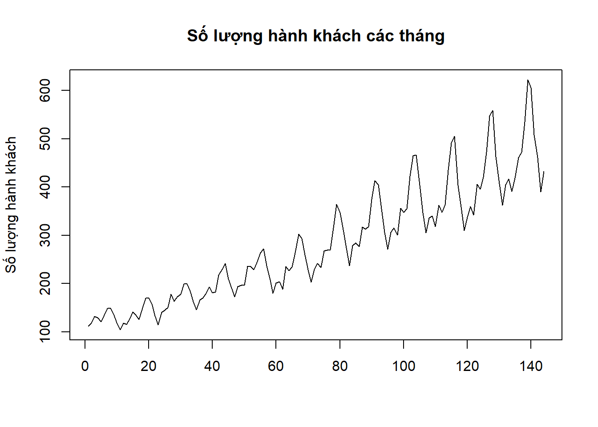

Chương 3 Biến trong R
Biến là khái niệm cơ bản nhất trong mọi ngôn ngữ lập trình. Có bốn loại biến cơ bản trong R bao gồm có biến kiểu số, biến kiểu ký tự, biến kiểu logic, và biến kiểu thời gian. Mỗi kiểu biến sẽ được thảo luận cụ thể trong phần tiếp theo của cuốn sách.
Để tạo một biến trong R bạn đọc sử dụng một trong ba cách như sau
# Cách thứ nhất
variable_name <- variable_value # dấu "<-" là dấu gán giá trị
# Cách thứ hai
variable_value -> variable_name
# Cách thứ ba
variable_name = variable_value # dấu "=" cũng được sử dụng để gán giá trịTrong đó “variable_name” là tên biến mà bạn muốn đặt, variable_value là giá trị mà bạn muốn gán cho biến. Ký tự gán giá trị “<-” được sử dụng trong các phiên bản R đầu tiên. Từ năm 2001 trở đi, dấu “=” cũng có thể được sử dụng.
# Cách thứ nhất
x <- 3 # tạo một biến tên là x có giá trị bằng 3
# Cách thứ hai
"MFE" -> y # tao một biến tên là y có giá trị bằng đoạn ký tự "MFE"
# Cách thứ ba
z = 1 + 2 # tạo một biến tên là z và nhận giá trị bằng kết quả của phép cộngTrong R, tên biến có thể là tổ hợp của tất cả các chữ cái viết hoa, chữ cái viết thường và các chữ số. Trong tên biến có thể chứa hai ký tự đặc biệt là “.” và “" tuy nhiên tên biến không được phép bắt đầu bằng số hoặc ký tự "”. Bạn đọc có thử chạy các câu lệnh tạo biến dưới đây và kiểm tra xem dòng lệnh nào báo lỗi và dòng lệnh nào không báo lỗi
x1 <- 3 # biến tên x1 sẽ được tạo với giá trị bằng 3
1x <- 3 # sẽ báo lỗi vì tên biến không được phép bắt đầu bằng số
.x <- 3 # biến tên .x sẽ được tạo với giá trị bằng 3
_x <- 3 # sẽ báo lỗi vì tên biến không được phép bắt đầu bằng sốLưu ý rằng R phân biệt chữ hoa với chữ thường trong tên biến
x<-3 # tạo một biến tên x nhận giá trị bằng 3
X<-5 # tạo một biến tên X nhận giá trị bằng 5
X-x # hiệu số nhận giá trị bằng 2 do x và X là khác nhauĐể xem biến nhận giá trị nào, bạn đọc có thể kiểm tra trên cửa sổ Environment ở góc phía trên bên phải của Rstudio hoặc gõ trực tiếp tên biến lên một dòng lệnh mới trên cửa sổ Console sau đó cho dòng lệnh chạy. Để xóa một biến, bạn đọc sử dụng lệnh \[rm()\]
x # R Console sẽ cho biết giá trị bằng 3
rm(x) # xóa biến x khỏi ứng dụng Rstudio đang chạy
x # sau khi xóa biến x sẽ không còn tồn tại nên R sẽ báo lỗiMột điều cũng cần lưu ý khi đặt tên biến, hay tên bất kỳ một đối tượng nào khác trong R như vector, ma trận, data.frame()… đó là tên biến không được phép trùng với các từ khóa thông dụng hay dùng trong ngôn ngữ R. Danh sách các từ khóa nằm trong bảng dưới đây
| Từ khóa | Sử dụng trong ngữ cảnh |
|---|---|
| If, else | Câu lệnh điều kiện |
| for, while, in , repeat | Vòng lặp |
| function | Khai báo hàm số |
| break, next | Điều khiển vòng lặp |
| TRUE, FALSE | Tên các biến logic |
| Inf, -Inf, NaN, NA | Các biến kiểu số dạng đặc biệt |
3.0.1 Biến kiểu số
Biến kiếu số, được gọi là , nhận giá trị kiểu số thập phân. Để tạo một biến kiểu số, hoặc bất kì một kiểu biến nào khác, bạn đọc hãy khởi tạo biến bằng một giá trị bất kỳ có kiểu như bạn mong muốn.
x <- 5 # do 5 là giá trị kiểu số nên R sẽ hiểu x là biến kiểu sốĐể kiểm tra xem có phải là biến kiểu số không, bạn đọc sử dụng hàm . Nhìn chung, để biết một biến bất kỳ là kiểu biến nào, bạn đọc sử dụng hàm
is.numeric(x) # do 5 là giá trị kiểu số nên R trả lời TRUE## [1] TRUEclass(x) # do 5 là giá trị kiểu số nên R sẽ hiểu x là biến kiểu số (numeric)## [1] "numeric"Biến kiểu số tự nhiên (integer) là kiểu biến dạng số nguyên. Trong phép gán cho giá trị của biến ở trên, mặc dù giá trị khởi tạo (5) là số nguyên nhưng R vẫn mặc định cho rằng là số thập phân. Để tạo một biến kiểu số nguyên trong R, bạn đọc sử dụng chữ “L” phía sau số nguyên để báo cho R biết biến muốn khởi tạo là số tự nhiên. Chữ L là viết tắt cho “Long” nghĩa là số nguyên dạng trong các ngôn ngữ lập trình cơ bản như . Số nguyên dạng cần 32 bytes để lưu và nhận giá trị từ −2,147,483,648 (\(-2^31\)) đến 2,147,483,647 (\(2^31-1\)).
x<-5L # 5L nghĩa là số nguyên 5, L là viết tắt của Long
class(x) # sẽ trả lại giá trị là số tự nhiên## [1] "integer"is.numeric(x) # x sẽ không còn là số thập phân nữa nên R sẽ trả lại FALSE## [1] TRUEViệc phân biệt số nguyên và số thập phân trong các ngôn ngữ lập trình có ý nghĩa khi bạn đọc cần tiết kiệm bộ nhớ cho chương trình. Nhìn chung, việc sử dụng số thập phân thay cho số nguyên sẽ khiến cho chương trình của bạn đọc cần dung lượng bộ nhớ tăng gấp 2 lần. Hình vẽ dưới đây mô tả dung lượng bộ nhớ cần sử dụng cho các vector dạng số nguyên và số thập phân với độ dài từ 1 đến 100. Không có sự khác biệt về bộ nhớ cho vector có độ dài dưới 10 nhưng khi vector có độ dài từ 10 trở lên, vector dạng số thập phân cần trung bình khoảng 2 lần bộ nhớ so với vector dạng số nguyên.

Các phép tính toán thông thường được sử dụng với biến dạng số được mô tả trong bảng phía dưới
| Ký hiệu | Phép tính |
|---|---|
| ‘+’ | Phép tính cộng |
| ‘-’ | Phép tính trừ |
| ’*’ | Phép tính nhân |
| ‘/’ | Phép tính chia |
| ‘^’ | Phép tính lũy thừa |
| ‘log()’ | Phép lấy loga cơ số tự nhiên |
| ‘log(.,a)’ | Phép lấy loga cơ số a |
| ‘%%’ | Phép lấy phần dư trong phép chia |
| ‘%/%’ | Phép lấy phần nguyên của kết quả trong phép chia |
Trong R, các phép toán \(%%\) và \(%\%\) có thể thực hiện được với cả số dạng thập phân
6.5 %% 2 # phần dư của phép chia 6.5 cho 2, R sẽ trả kết quả là 1.5## [1] 0.56.5 %/% 2 # phần nguyên của kết quả của phép chia 6.5 cho 2## [1] 3Ngoài việc gán cho biến các giá trị số thập phân thông thường, bạn đọc có thể sử dụng các giá trị kiểu số đặc biệt trong R. Các giá trị đặc biệt này bao gồm có
| Loại số | Ý nghĩa |
|---|---|
| 1.2e+10 | nghĩa là nhân số ở phía trước với |
| 1.2e-5 | nghĩa là nhân số ở phía trước với |
| Inf | Số dương vô cùng |
| -Inf | Số âm vô cùng |
| NaN | NaN là viết tắt của Not a Number, là kết quả của các phép tính không có nghĩa |
Bạn đọc có thể thử tính toán trên các giá trị đặc biệt và kiểm tra kết quả
1/0 # kêt quả của 1/0 là dương vô cùng (Inf)
(-1)/0 # kêt quả của 1/0 là âm vô cùng (-Inf)
Inf - 10^10 # Trong các phép tính có Inf sẽ dẫn đến kết quả là Inf
1/0 + (-1)/0 # Inf + (-Inf) là không thể xác định được (NaN)
log(-2) # Kết quả của các phép tính không có nghĩa là NaN3.0.2 Biến kiểu logic
Biến kiểu logic là biến đơn giản nhất, nhưng lại là kiểu biến quan trọng nhất trong mọi ngôn ngữ lập trình. Biến kiểu logic chỉ nhận một trong hai giá trị là \(TRUE\) hoặc \(FALSE\). Do R phân biệt chữ viết hoa và chữ viết thường nên bạn đọc lưu ý khi viết giá trị cho biến dạng logic. Để tạo một biến dạng logic, bạn đọc tạo tên biến và gán giá trị logic cho biến đó giống như đối với biến dạng số
x<-TRUEBiến dạng logic có thể đặt trong các phép tính toán giống như biến dạng số. Khi gặp một công thức có bao gồm biến dạng số và biến dạng logic, R sẽ đổi biến logic nhận giá trị \(TRUE\) sang số 1 và biến logic có giá trị \(FALSE\) sang số 0 sau đó thực hiện phép tính toán như thường.
FALSE + TRUE * 10 # Sẽ cho kết quả giống như 0 + 1 * 10Trong thực tế, hiếm khi chúng ta cần phải khởi tạo giá trị cho biến logic như trên, mà biến logic thường nhận được từ kết quả các phép so sánh trong R. Các phép toán so sánh trong R bao gồm có
| Phép so sánh | Ý nghĩa |
|---|---|
| < | Có nhỏ hơn không? |
| > | Có lớn hơn không? |
| <= | Có nhỏ hơn hoặc bằng không? |
| >= | Có lớn hơn hoặc bằng không? |
| == | Có bằng nhau không? |
| != | Có khác nhau không? |
Ngoài ra, các biến logic còn là kết quả của việc kết hợp nhiều biến logic khác bằng các toán tử logic và, hoặc và phủ định
| Toán tử logic | Ý nghĩa |
|---|---|
| & | Toán tử Và; A&B đọc là mệnh đề A và mệnh đề B |
| | | Toán tử Hoặc; A|B đọc là mệnh đề A hoặc mệnh đề B |
| ! | Toán tử Phủ định; Toán tử này lại biến logic đứng sau |
Bạn đọc nên ghi nhớ quy tắc kết hợp các biến logic với các toán tử logic như bảng dưới đây
| Kết hợp | Kết quả |
|---|---|
| !TRUE | FALSE |
| !FASLE | TRUE |
| TRUE & TRUE | TRUE |
| TRUE & FALSE | FALSE |
| FALSE & TRUE | FALSE |
| TRUE | TRUE | TRUE |
| TRUE | FALSE | TRUE |
| FALSE | TRUE | TRUE |
Như đã đề cập ở phần trước, các biến dạng logic khi đặt trong các biểu thức tính toán kiểu số sẽ tự động chuyển đổi sang biến kiểu số trước khi thực hiện phép tính. Ngược lại, khi biến kiểu số xuất hiện trong các biểu thức có toán tử logic, biến kiểu số cũng sẽ được chuyển sang kiểu logic. Tuy nhiên, bạn đọc lưu ý rằng “số 0 đặt trong biểu thức có toán tử logic sẽ chuyển sang thành \(FALSE\) và mọi số khác 0 khi đổi sang dạng logic đều chuyển thành \(TRUE\)”
Bạn đọc có thể thực hành việc tính toán trên các toán tử logic như dưới đây. Thay vì chỉ yêu cầu R trả lại kết quả, hãy thử suy nghĩ trước xem các biểu thức sau đây cho kết quả như thế nào.
# 1.
(1<=2) | (2<=3)
# 2.
(1<=2) + (2<=3)
# 3.
((1<=2) * (2^2 == 4)) | (2!=3) #
# 4.
!((1<=2) * (2^2 == 4)) & !(2!=3) #
# 5.
((2 + 2) | (2 - 2)) & !(2 ^ 2) #3.0.3 Biến kiểu ký tự
Biến kiểu ký tự trong R cũng giống như biến kiểu xâu ký tự (string) trong các ngôn ngữ lập trình khác. Trong R, biến kiểu ký tự được gọi là kiểu character. Biến kiểu ký tự trong R có thể chỉ ngắn gọn là một chữ cái, và đôi khi có thể là cả một câu hoặc cả một đoạn văn dài. Khi làm việc với biến kiểu ký tự, cần ghi nhớ rằng R phân biệt chữ viết hoa và chữ viết thường.
Để tạo một biến có kiểu ký tự trong R, bạn đọc chỉ cần khởi tạo cho biến bằng giá trị kiểu ký tự. R sẽ hiểu một giá trị khi giá trị đó nằm trong dấu ngoặc kép hoặc cũng có thể trong dấu ngoặc đơn (’).
x<-"Ice cream" # "Ice cream" với chữ I viết hoa sẽ khác "ice cream" khi i là chữ thường
x == "ice cream" # sẽ trả ra giá trị là FALSEĐể kiểm tra một biến có phải dạng biến character không, bạn đọc có thể dùng hàm is.character()
x<-"Ice cream"; is.character(x)## [1] TRUEKhi xử lý biến kiểu ký tự, bạn đọc nên sử dụng các hàm số đã được xây dựng sẵn trong R. Bảng dưới đây liệt kê danh sách các hàm thường sử dụng
| Hàm số | Ý nghĩa |
|---|---|
| nchar(x) | Cho biêt biến x dạng chuỗi ký tự có bao nhiêu ký tự |
| paste(x1,x2,sep = a) | Ghép hai chuỗi ký tự x1 và x2 thành một chuỗi ký tự cách nhau chuỗi ký tự a |
| toupper(x) | Chuyển tất cả các chữ viêt thường trong x thành chữ viết hoa |
| tolower(x) | Chuyển tất cả các chữ viết hoa trong x thành chữ viết thường |
| chartr(a,b,x) | Thay thế từng ký tự của a tương ứng bằng ký tụ của b trong x, a và b phải có độ dài bằng nhau |
| substr(x,n1,n2) | Lấy ra chuỗi ký tự con từ x, lấy từ ký tự thứ n1 đến ký tự thứ n2 |
| sub(a, b, x) | Đoạn ký tự a đầu tiên trong x sẽ được thay thế bằng đoạn ký tự b |
| gsub(a, b, x) | Tất cả các đoạn ký tự giống a trong x sẽ được thay thế bằng b |
| grepl(a,x) | Trả lại giá trị là biến TRUE nếu đoạn ký tự a nằm trong biến x |
Bạn đọc hãy thử chạy các hàm như phía dưới và quan sát giá trị trả ra của các hàm để hiểu cách áp dụng
x1<-"I am an Actuary"; x2<-"I am Vietnamese"
nchar(x1) # cho biết x1 có bao nhiêu ký tự, tính cả các khoảng trống
paste(x1, x2, sep = " and ") # ghép x1 và x2 lại với nhau và thêm " and " vào giữa
toupper(x1); tolower(x1) # chuyển tất cả các ký tụ sang viết hoa/viết thường
chartr("an","bm",x1) # thay tất cả các chữ "a" trong x1 bằng "b" và "n" bằng "m"
substr(x1, 9, 15) # lấy ra đoạn ký tự từ ký tự thứ 9 (chữ A) đến ký tự thứ 15 (chữ "y")
sub("a", "XYZ", x1) # thay chữ "a" đầu tiên trong x1 bằng đoạn "XYZ"
gsub("a", "XYZ", x1) # thay tất cả chữ "a" trong x1 bằng đoạn "XYZ"
grepl("Vietnam", x2) # cho biết đoạn ký tự "Vietnam" có nằm trong x2 hay không Nhìn chung xử lý dữ liệu dạng chuỗi ký tự sẽ khó khăn hơn so với xử lý biến dạng số. Để thực hiện được các yêu cầu phức tạp hơn, bạn đọc có thể kết hợp các hàm số ở trên để có hiệu quả tốt hơn, hoặc sử dụng các package được phát triển cho biến dạng ký tự. Chúng tôi thường sử dụng package “stringr” khi xử lý biến kiểu ký tự.
Một kiểu biến bạn đọc cũng có thể thường gặp trong R là kiểu factor. Biến kiểu factor cũng có thể được hiểu là biến kiểu chuỗi ký tự nhưng được R lưu trữ dưới dạng tiết kiệm bộ nhớ. Chúng ta sẽ thảo luận kỹ hơn về biến kiểu factor khi làm việc với vector chuỗi ký tự và khi làm việc với data.frame() trong R.
3.0.4 Biến kiểu thời gian
Trong R có hai kiểu biến thời gian là biến dạng ngày tháng (Date) và biến dạng thời gian chi tiết (POSIXct). Thời gian POSIX hay còn được biết đến với tên gọi là thời gian Unix là một cách quy ước về thời gian của một thời điểm cụ thể được tính bằng số giây từ cột mốc thời gian Unix đến thời điểm đó. Cột mốc thời gian Unix là được các kỹ sư xây dựng hệ điều hành Unix lựa chọn là thời điểm 0 giờ, 0 phút, 0 giây, ngày 01 tháng 01 năm 1970 theo giờ phối hợp quốc tế (giờ UTC). Chữ “ct” là viết tắt của canlendar time. Bạn đọc cũng có thể gặp biến dạng thời gian chi tiết trong R dưới dạng POSIXlt trong đó “lt” là chữ viết tắt của local time. Sự khác biệt của biến kiểu POSIXct và POSIXlt chỉ là cách R lưu trữ các biến này dưới dạng số nguyên hay dưới dạng vector.
Để tạo một biến kiểu thời gian trong R, bạn đọc sử dụng hàm “as.Date()” cho ngày tháng và “as.POSIXct()” cho kiểu thời gian chi tiết.
date1<-as.Date("2023-08-31") # biến date1 nhận giá trị là ngày 31 tháng 08 năm 2023
time1<-as.POSIXct("2023-08-31 16:41:30") # 16 giờ, 41 phút, 30 giây ngày 31 tháng 08 năm 2023Khi xử lý biến kiểu thời gian, bạn đọc nên đổi biến thời gian sang dạng số hoặc dưới dạng vector số. Hàm as.numeric() sẽ đổi các biến kiểu ngày tháng hoặc thời gian chi tiết ra thành số ngày/số giây tính từ mốc thời gian Unix.
as.numeric(date1) # cho biết số ngày tính từ 01/01/1970 đến date1## [1] 19600time2<-as.POSIXct("1970-01-01 07:00:30")
as.numeric(time2) # cho biết số giây tính từ 7 giờ, 0 phút, 0 giây ngày 01/01/1970 đến time2## [1] 30Do múi giờ UTC của Việt Nam là (UTC + 7) nên thời điểm tính làm mốc sẽ là 7 giờ, 0 phút, 0 giây ngày 01 tháng 01 năm 1970. Điều này giải thích tại sao khi đổi biến time2 thành dạng số ta sẽ thu được kết quả là 30. Khi sử dụng các hàm as.Date() hoặc as.POSIXct() giá trị được đưa vào phải là biến dạng chuỗi ký tự được viết theo đúng quy tắc “YYYY-MM-DD” và “YYYY-MM-DD hh:mm:ss”. Trong trường hợp chuỗi ký tự được đưa vào không đúng định dạng, bạn đọc cần phải thông báo cho R biết định dạng của biến chuỗi ký tự đó. Bạn đọc có thể tham khảo cách khai báo định dạng của biến chuỗi ký tự trong các hàm as.Date() hoặc as.POSIXct() như sau
date1<-as.Date("02/27/92", format = "%m/%d/%y") # date1 sẽ nhận giá trị là ngày 27 tháng 02 năm 1992
date2<-as.Date("02 Jan 2010", format = "%d %b %Y") # ngày 02 tháng 01 năm 2010Biến dạng thời gian sẽ được lấy từ các nguồn khác nhau vào R sẽ được hiểu dưới dạng số tự nhiên. Điển hình là khi lấy dữ liệu từ các file lưu từ Microsoft Excel. Hàm as.Date() hoặc as.POSIXct() cũng có thể chạy khi giá trị được đưa vào là biến dạng số tự nhiên. Bạn đọc cần biết được nguyên tắc đổi từ biến thời gian sang kiểu số của nguồn dữ liệu đó để có thể chuyển đổi thành biến thời gian trong R một cách chính xác. Chẳng hạn như biến dạng thời gian từ Microsoft Excel khi đọc vào R có giá trị là 39768. Nếu không sử dụng mốc thời gian chính xác để chuyển đổi, giá trị thời gian nhận được sẽ không đúng.
date1<-as.Date(39786, origin = "1970-01-01")
date1 # date1 sẽ nhận giá trị SAI khi nhận định mốc thời gian là ngày 01 tháng 01 năm 1970## [1] "2078-12-06"date2<-as.Date(39786, origin = "1899-12-30")
date2 # date2 sẽ nhận giá trị ĐÚNG do khi chuyển đổi đã dùng đúng mốc thời gian của Excel## [1] "2008-12-04"Nguyên tắc cơ bản khi xử lý và tính toán với biến dạng thời gian trong R là luôn luôn đổi biến sang dạng số nguyên hoặc đổi một biến dạng thời gian thành ba biến ngày, tháng, năm ở dạng số. Để tách biến dạng thời gian ra thành ngày, tháng, năm bạn đọc có thể sử dụng hàm sub.str() để lấy ra các đoạn ký tự chứa giá trị ngày, tháng, và năm rồi sau đó sử dụng ham as.numeric() để đổi các biến thành kiểu số.
year<-as.numeric(substr(date2,1,4)) # sẽ lấy ra đoạn ký tự từ 1-4 trong date2 sau đó đổi đoạn ký tự thành số
month<-as.numeric(substr(date2,6,7)) # sẽ lấy ra đoạn ký tự từ 6-7 trong date2 sau đó đổi đoạn ký tự thành số
day<-as.numeric(substr(date2,9,10)) # sẽ lấy ra đoạn ký tự từ 9-10 trong date2 sau đó đổi đoạn ký tự thành sốGói lệnh thường được sử dụng khi làm việc với biến dạng thời gian là gói lệnh \(lubridate\). Bạn đọc sẽ thực hành với biến thời gian chi tiết hơn ở phần xử lý dữ liệu dạng data.frame.
3.1 Vec-tơ trong R
Trong phần này của cuốn sách chúng tôi sẽ giới thiệu các khái niệm cơ bản về véc-tơ để bạn đọc có hiểu biết cơ bản nhất. Trong các phần tiếp theo trong cuốn sách đều có liên quan ít nhiều đến đối tượng véc-tơ do đó việc đi quá sâu vào vec-tơ trong phần này là không thực sự cần thiết.
3.1.1 Tại sao xử lý véc-tơ là thế mạnh của R?
Véc-tơ là một tập hợp các phần tử có cùng kiểu được sắp xếp theo một thứ tự nhất định. Thứ tự của một phần tử trong véc-tơ thường được gọi là chỉ số. Phần tử đầu tiên trong một véc-tơ của R có chỉ số là 1. Bạn đọc hãy lưu ý điều này bởi trong một vài ngôn ngữ khác chỉ số của phần tử đầu tiên trong véc-tơ sẽ là 0. Vec-tơ là đối tượng quan trọng nhất trong R và xử lý vec-tơ chính là một thế mạnh của R mà đa số các ngôn ngữ cơ bản khác không đáp ứng được.
Khi bạn đọc làm việc với dữ liệu, các thao tác biến đổi dữ liệu thường sẽ là biến đổi đồng thời các giá trị trên cùng một hàng hoặc một cột dữ liệu. Hiếm khi các thao tác này được thực hiện với một giá trị riêng lẻ. Đối tượng véc-tơ là một công cụ hiệu quả để thực hiện các công việc này. Hiệu quả ở đây không chỉ bao gồm sự tiện lợi khi viết các câu lệnh, mà còn hiệu quả ở cả thời gian thực hiện tính toán. Trong phần Lập trình với R chúng tôi sẽ thảo luận kỹ hơn về hiệu quả về thời gian tính toán. Hãy nói về sự tiện lợi khi sử dụng véc-tơ trước. Bạn đọc hãy thử thực hiện một phân tích trên dữ liệu \(trump\_tweets\) bằng cách chạy một đoạn câu lệnh sau
library(dslabs) # cần gọi thư viện dslabs chứa dữ liệu trump_tweets
barplot(table(as.factor(as.numeric(substr(trump_tweets$created_at,12,13)))),
main = "Tổng thống Trump viết tweet vào thời gian nào trong ngày", col = 3)
Đoạn câu lệnh trên cho kết quả là cựu tổng thống Donald Trump thường viết tweet vào thời gian nào trong ngày. Kết quả này thu được bằng việc thực hiện 1 loạt các phép tính toán, biến đổi cột dữ liệu có tên là \(created\_at\):
- Lấy ra đoạn ký tự chứa giá trị là giờ của cột \(created\_at\) (dùng hàm \(substr\)).
- Chuyển đổi dữ liệu kiểu chuỗi ký sang kiểu số (dùng hàm \(as.numeric\)).
- Chuyển đổi dữ liệu kiểu số sang kiểu factor (dùng hàm \(as.factor\))
- Tổng hợp lại dữ liệu kiểu factor theo các nhóm (dùng hàm \(table\))
- Vẽ đồ thị kiểu \(barplot\) để người đọc hiểu về dữ liệu một cách nhanh chóng và trực quan hơn.
Đi từ cột dữ liệu kiểu \(POSIXct\) đến kết quả là đồ thị dạng \(barplot\) mà chỉ cần một dòng lệnh là việc gần như không thể đối với đa số các ngôn ngữ lập trình. Các ngôn ngữ lập trình cơ bản chỉ cho phép người sử dụng tác động đển từng phần tử của véc-tơ một cách lần lượt và riêng lẻ. Trái lại, khi bạn đọc thực hiện một phép biến đổi hay tính toán trên đối tượng là vec-tơ trong R, các phép tính toán hay biến đổi này sẽ được thực hiện một cách đồng thời cho tất cả các phần tử trong véc-tơ. Ngoài việc giúp cho các câu lệnh trở nên đơn giản, dể hiểu, R cũng được phát triển để những tính toán trên véc-tơ được thực hiện theo cơ chế song song. Hiểu một cách đơn giản là việc thực hiện các phép toán trên các phần tử của một véc-tơ sẽ diễn ra cùng một lúc chứ không thực hiện một cách lần lượt.
Hầu hết các hàm số trên R đều được phát triển theo cơ chế lập trình vec-tơ. Nghĩa là các hàm số được dùng cho một biến kiểu số đều có thể áp dụng được cho một véc-tơ kiểu số hay các hàm số được dùng cho một biến kiểu chuỗi ký tự đều có thể áp dụng được cho một véc-tơ kiểu chuỗi ký tự. Trong ví dụ với cột (véc-tơ) \(created\_at\) của dữ liệu \(trump\_tweets\) ở trên, các hàm số được sử dụng như \(substr\), \(as.numeric\), … đều có đầu vào là một véc-tơ. Bạn đọc hãy lưu ý điều này khi tự xây dựng hàm số trên R.
Ngoài việc thực hiện tính toán trên các véc-tơ riêng lẻ, cơ chế hoạt động của R cũng cho phép thực hiện tính toán tương tác giữa các véc-tơ với nhau. Tương tác giữa hai hay nhiều véc-tơ với nhau luôn được thực hiện trên nguyên tắc các phần tử có cùng chỉ số của các véc-tơ sẽ tương tác với nhau. Thậm chí các véc-tơ tương tác với nhau có thể không có cùng kích thước vẫn cho kết quả. Chi tiết sẽ được thảo luận trong các phần tiếp theo.
3.1.2 Khởi tạo véc-tơ và các phép toán trên véc-tơ
3.1.2.1 Khởi tạo véc-tơ
Để tạo một vec-tơ trong R bạn đọc có thể sử dụng bất kỳ một hàm số sẵn có với đầu ra là một vec-tơ. Hàm số thông dụng nhất được dùng để tạo vec-tơ trong R là hàm \(c()\); \(c\) là viết tắt của concatenate, hoặc một vài tài liệu cho rằng \(c\) là viết tắt của combine. Về mặt ý nghĩa, hàm \(c()\) tập hợp các đối tượng được liệt kê trong dấu \(()\) lại để tạo thành một đối tượng duy nhất. Nếu các phần tử được liệt kê ra có cùng kiểu dữ liệu, đối tượng tượng tạo thành sẽ là một véc-tơ
x<-c(1,1,2,3,5,8,13,21) # Kết quả là một vec-tơ kiểu số
qua = c("chuối", "táo", "cam", "chanh") # qua là vec-tơ chứa tên các loại quảKhi các biến được liệt kê bên trong hàm \(c()\) không cùng kiểu, R sẽ cố gắng phân tích các giá trị đó để đưa ra kết quả phù hợp. Nguyên tắc chung là nếu các giá trị được liệt kê bên trong hàm \(c()\) là kiểu số, kiểu logic, hoặc kiểu thời gian thì véc-tơ được tạo thành sẽ là véc-tơ kiểu số. Trong trường hợp có 1 biến được liệt kê ra là kiểu chuỗi ký tự, véc-tơ được tạo thành sẽ là véc-tơ kiểu chuỗi ký tự. Bạn đọc có thể kiểm tra giá trị của các véc-tơ sau:
x<-c(1,TRUE, FALSE) # Kết quả là một vec-tơ kiểu số
x<-c(TRUE, as.Date("2023-12-31")) # Kết quả là một vec-tơ kiểu số
x<-c(1, TRUE, as.Date("2023-12-31"),"MFE") # Kết quả là một vec-tơ kiểu chuỗi ký tựCác giá trị bên trong hàm \(c()\) cũng có thể là một véc-tơ khác, thậm chí có thể là một ma trận (matrix), hoặc là kiểu mảng (array) thì giá trị đầu ra vẫn sẽ là một véc-tơ. Đối với ma trận hàm \(c()\) sẽ “duỗi” các phần tử ra thành 1 véc-tơ theo thứ tự các cột bắt đầu từ cột có chỉ số \(1\). Chúng ta sẽ quay lại vấn đề này trong phần ma trận và mảng.
x<-c(1, TRUE, as.Date("2023-12-31"),"MFE") # Kết quả là một vec-tơ kiểu chuỗi ký tự
y<-c(x,"Actuary",x) # Combine các véc-tơ lại thành 1 véc-tơ duy nhất Bất kỳ hàm số sẵn có nào có đầu ra là véc-tơ đều có thể dùng để tạo thành véc-tơ. Các hàm mà chúng tôi hay sử dụng để khởi tạo véc-tơ trong R là hàm \(rep()\) và hàm \(seq()\). Hàm \(rep(x,n)\) có ý nghĩa là lặp lại giá trị (1 biến \(x\) hoặc 1 véc-tơ \(x\)) \(n\) lần, trong khi hàm số \(seq(from = a, to = b,length = n)\) tạo thành một dãy số tăng dần (hoặc giảm dần) bắt đầu từ \(a\) kết thúc tại \(b\) có độ dài véc-tơ là \(n\)
x<-rep(1,10^3) # Véc-tơ có các giá trị đều là 1, độ dài 1.000
y<-rep(c("a","b"),10^3) # Lặp lại véc-tơ ("a","b") 1.000 lần
z<-seq(from = 0,to = 1,length = 101) # Dãy số tăng dần từ 0 đến 1, độ dài là 1013.1.2.2 Các hàm số thường sử dụng trên véc-tơ
| Hàm số | Ý nghĩa | Áp dụng trên |
|---|---|---|
| length(x) | Số lượng phần tử trong véc-tơ \(x\) | Mọi kiểu véc-tơ |
| sum(x) | Tổng các số trong véc-tơ \(x\) | Kiểu số, logic, thời gian |
| prod(x) | Tích các số trong véc-tơ \(x\) | Kiểu số, logic, thời gian |
| mean() | Giá trị trung bình của các số trong véc-tơ \(x\) | Kiểu số, logic, thời gian |
| var(x) | Phương sai của các giá trị trong véc-tơ \(x\) | Kiểu số, logic, thời gian |
| sd(x) | Độ lệch chuẩn của các giá trị trong véc-tơ \(x\) | Kiểu số, logic, thời gian |
| min(x) | Giá trị nhỏ nhất trong \(x\) | Mọi kiểu véc-tơ |
| max(x) | Giá trị lớn nhất trong \(x\) | Mọi kiểu véc-tơ |
| quantile(x,p) | Giá trị tại mức xác suất \(p\) của véc-tơ \(x\) | Kiểu số, logic, thời gian |
| sort(x) | Sắp xếp các phần tử của \(x\) theo thứ tự TĂNG dần | Mọi kiểu véc-tơ |
| table(x) | Cho biết tần suất xuất hiện của mỗi phần tử | Mọi kiểu véc-tơ |
Bạn đọc lưu ý rằng còn nhiều hàm số hữu ích khác được xây dựng sẵn khi tính toán với véc-tơ mà chúng tôi không liệt kê ở đây. Đồng thời, mỗi hàm số còn có các tùy biến đề sử dụng trong các hoàn cảnh khác nhau. Chẳng hạn khi trong véc-tơ \(x\) có giá trị \(NaN\) hoặc \(NA\) thì các hàm như \(sum(x)\), \(mean(x)\), … sẽ trả lại giá trị là \(NA\). Trong trường hợp này, bạn đọc cần sử dụng thêm tùy biến \(na.rm=TRUE\) để R hiểu rằng các phép tính toán chỉ thực hiện trên các giá trị có ý nghĩa.
x<-c(rep(1,10),2,3,NA)
sum(x) # sẽ trả lại giá trị là $NA$ vì trong $x$ có giá trị $NA$## [1] NAsum(x,na.rm=TRUE) # sẽ trả lại giá trị là $NA$ vì trong $x$ có giá trị $NA$## [1] 15Cách tốt nhất để hiểu và sử dụng hiệu quả và đúng mục đích các hàm số liệt kê ở trên là đọc hướng dẫn của hàm số đó. Trong cuốn sách này chúng tôi chỉ nhấn mạnh những ứng dụng mà chúng tôi cho rằng quan trọng khi ứng dụng các hàm số trong thực tế.
Các hàm số sử dụng trên các véc-tơ kiểu số như \(sum()\), \(mean()\), hay thậm chí cả \(var()\), \(sd()\) có thể hoạt động trên cả véc-tơ kiểu thời gian hoặc kiểu logic. Nếu phép toán thực hiện không thể giữ nguyên kiểu dữ liệu của véc-tơ thì R sẽ đổi véc-tơ kiểu thời gian hoặc logic sang kiểu số để thực hiện tính toán.
x<-c(as.Date("2023-01-01"),as.Date("2023-12-31"))
mean(x) # trả lại giá trị là kiểu thời gian## [1] "2023-07-02"sd(x) # kiểu thời gian ko có ý nghĩa nên R sẽ đổi x sang kiểu số để tính toán## [1] 257.3869Ngoài các nguyên tắc tính toán thông thường, bạn đọc còn có thể thấy R có thể sắp xếp các phần tử trong một véc-tơ bất kỳ bằng hàm \(sort()\) hoặc lấy ra giá trị “lớn nhất” hoặc “nhỏ nhất” của một véc-tơ bất kỳ. Điều này là khá hiển nhiên với các véc-tơ kiểu số. Trong trường hợp véc-tơ kiểu logic hay kiểu ngày tháng, có lẽ bạn đọc cũng sẽ đoán được rằng R sẽ đổi giá trị của véc-tơ đó sang kiểu số để tiến hành sắp xếp. Chắc hẳn bạn đọc sẽ đặt câu hỏi về cách sắp xếp các phần tử trong véc-tơ kiểu chuỗi ký tự. Bản thân các tác giả của cuốn sách cũng không có nhiều kinh nghiệm về vấn đề này, tuy nhiên có các nguyên tắc khi sắp xếp véc-tơ kiểu chuỗi ký tự trong R mà chúng tôi cho rằng sẽ hữu ích với bạn đọc:
Nếu véc-tơ kiểu chuỗi ký tự được biến đổi thành kiểu factor thì thứ tự sắp xếp tăng dần sẽ phụ thuộc vào cách định nghĩa các level của factor.
Khi so sánh hai chuỗi ký tự, phép so sánh sẽ được thực hiện ở ký tự thứ nhất trước, nếu hai ký tự đầu tiên giống nhau thì sẽ so sánh ở ký tự tiếp theo, và tiếp tục như thế đến khi có sự khác biệt
Các ký tự đặc biệt luôn được xếp trước (nhỏ hơn), sau đó đến các ký tự là các số, rồi đến chữ cái. Thứ tự sắp xếp của các ký tự số theo đúng thứ tự tăng dần từ 0 đến 9 trong khi thứ tự sắp xếp của các chữ cái là tăng dần theo bảng chữ cái, chữ viết thường được viết trước chữ viết hoa tuy nhiên chữ viết hoa của chữ cái đứng trước lại “nhỏ hơn” chữ viết thường của chữ đứng sau trong bảng chữ cái.
Trước khi sử dụng R để in ra kết quả, bạn đọc hãy thử “đoán” xem R sẽ trả lại kết quả như thế nào khi chạy các câu sắp xếp các véc-tơ sau theo thứ tự TĂNG dần:
sort(c("a","az","z")) # luôn sử dụng chữ cái đầu tiên để so sánh## [1] "a" "az" "z"sort(c("a","az","z","A","Z")) # chữ cái đứng trước trong bảng chữ cái xếp trước## [1] "a" "A" "az" "z" "Z"sort(c("a","az","z","A","Z","1a")) # số luôn đứng trước chữ cái## [1] "1a" "a" "A" "az" "z" "Z"sort(c("a","az","z","A","Z","1a","@a")) # ký tự đặc biệt luôn đứng trước## [1] "@a" "1a" "a" "A" "az" "z" "Z"sort(c("a","az","z","A","Z","1a","@a", "0123")) # ký tự đặc biệt < số < chữ cái## [1] "@a" "0123" "1a" "a" "A" "az" "z" "Z"Hàm \(sort()\) nếu không sử dụng thêm tham số sẽ luôn sắp xếp véc-tơ theo thứ tự tăng dần. Để sắp xếp véc-tơ theo thứ tự giảm dần, bạn đọc có thể sử dụng thêm tùy biến \(decreasing = TRUE\) hoặc ngắn gọn hơn là \(decreasing = T\).
sort(c(1,1,2,3,5,8,13,21), decreasing = TRUE) # sắp xếp theo thứ tự giảm dần## [1] 21 13 8 5 3 2 1 1sort(c("a","az","z","A","Z","1a","@a", "0123"),decreasing = T) # có thể thay TRUE bằng T## [1] "Z" "z" "az" "A" "a" "1a" "0123" "@a"3.1.2.3 Tính toán trên véc-tơ
Như đã đề cập ở phần trước, R là ngôn ngữ lập trình véc-tơ. Bạn đọc có thể sử dụng véc-tơ như một đối tượng trong các phép tính toán hoặc so sánh mà không cần phải tác động đến từng phần tử riêng lẻ của véc-tơ đó. Điều này là không thể thực hiện được với các ngôn ngữ lập trình cơ bản.
Trước hết, chúng ta có thể đưa một véc-tơ \(x\) vào trong các phép tính toán thông thường như cộng, trừ, nhân, chia, lũy thừa, … với các số thực. Kết quả thu được sẽ là một véc-tơ có độ dài bằng với véc-tơ ban đầu:
x<-1:5 # tạo thành véc-tơ dãy số tự nhiên từ 1 đến 5
x * 2 # nhân véc-tơ với một số## [1] 2 4 6 8 10x ^ 2 # phép lũy thừa, đối tượng là## [1] 1 4 9 16 25x %% 2 # lấy phần dư trong phép chia cho 2## [1] 1 0 1 0 1Quan sát kết quả được in ra, bạn đọc có thể dễ dàng nhận thấy rằng nguyên tắc thực hiện phép tính véc-tơ \(x\) nhân với số 2, hay bất kỳ phép tính nào khác, là lấy các phần tử riêng lẻ trong véc-tơ \(x\) nhân lên 2 và lưu lại trong một véc-tơ mới. Tương tự như phép tính toán, phép so sánh cũng có thể thực hiện giữa một véc-tơ với biến riêng lẻ để nhận được kết quả là một véc-tơ của các biến logic.
x<-c(1,1,2,3,5,8,13,21) # véc-tơ x kiểu số
x == 1 # Trả lại giá trị TRUE tại các vị trí bằng 1.## [1] TRUE TRUE FALSE FALSE FALSE FALSE FALSE FALSE(x > 10) | (x < 3) # # Trả lại giá trị TRUE tại các vị trí lớn hơn 10 hoặc nhỏ hơn 3## [1] TRUE TRUE TRUE FALSE FALSE FALSE TRUE TRUEs<-c("a","az","z","A","Z","1a","@a", "0123")
s == "a" # Trả lại giá trị TRUE tại các vị trí bằng "a"## [1] TRUE FALSE FALSE FALSE FALSE FALSE FALSE FALSEHầu hết các hàm số sẵn có trong R, hoặc các hàm số được phát triển trong các thư viện của R đều có thể áp dụng trên đối tượng là véc-tơ và nguyên tắc áp dụng hàm số trên véc-tơ cũng tương tự như nguyên tắc tính toán giữa véc-tơ với một số. Việc thực hiện tính toán sẽ được thực hiện trên các phần tử riêng lẻ của véc-tơ và sau đó lưu lại trong một véc-tơ mới có chiều dài bằng với véc-tơ ban đầu. Ví dụ như hàm \(nchar()\) khi sử dụng với một véc-tơ kiểu chuỗi ký tự sẽ trả lại giá trị là một véc-tơ kiểu số mà mỗi phần tử là số ký tự của phần tử tương ứng trong véc-tơ kiểu chuỗi ký tự
s<-c("a","az","z","A","Z","1a","@a", "0123")
nchar(s) # trả lại giá trị là một véc-tơ kiểu số## [1] 1 2 1 1 1 2 2 4Bằng cách kết hợp các hàm số trên véc-tơ và tương tác giữa véc-tơ với một biến, bạn đọc có thể tự tạo ra các hàm số, các phương pháp của riêng mình để giải quyết các vấn đề phức tạp hơn. Chẳng hạn như chúng ta muốn biết có bao nhiêu phần tử trong véc-tơ thỏa mãn một điều kiện nào đó, chúng ta có thể kết hợp hàm \(sum()\) với một biểu thức so sánh:
x<-c(1,1,2,3,5,8,13,21) # véc-tơ x kiểu số
sum(x>10) # cho biết có bao nhiêu phần tử trong x lớn hơn 10## [1] 2Khi thực hiện phép so sánh \(x > 10\), do \(x\) là một véc-tơ kiểu số nên phép so sánh sẽ trả lại giá trị là \(TRUE\) tại các vị trí mà kết quả so sánh là đúng và \(FALSE\) tại các vị trí còn lại. Khi kết hợp với hàm \(sum()\), các giá trị \(TRUE\) sẽ được đổi thành số 1 và \(FALSE\) được đổi thành 0. Kết quả thu được sẽ là số lượng các giá trị \(TRUE\) trong phép so sánh, hay nói một cách khác, là số các phần tử trong \(x\) thỏa mãn điều kiện lớn hơn \(10\). Tất nhiên với véc-tơ \(x\) có độ dài 10 như ở trên, bạn đọc có thể thực hiện tính toán mà không cần hỗ trợ của R. Nhưng thực tế thì hầu như các véc-tơ mà chúng ta thực hiện tính toán sẽ có độ dài lớn hơn rất nhiều và bạn đọc không thể không dùng phần mềm hỗ trợ. Chẳng hạn như bạn đọc muốn biết có bao nhiêu câu tweet của cựu tổng thống Donald Trump có nhiều hơn 10.000 like, hãy thử kết hợp \(sum\) với biểu thức so sánh
x<-trump_tweets$favorite_count # véc-tơ kiểu số cho biết mỗi câu được like bao nhiêu lần
sum(x>10^4) # cho biết có bao nhiêu phần tử trong x lớn hơn 10^4## [1] 4958Để hình dung cụ thể hơn tỷ lệ số câu tweet được like nhiều hơn 10.000 lần, có thể kết hợp thêm hàm \(length()\)
sum(x>10^4)/length(x) # cho biết có tỷ lệ phần tử trong x lớn hơn 10^4## [1] 0.2388132Có rất nhiều cách kết hợp các hàm số lại để đạt được kết quả mong muốn. Một kết quả phân tích có thể đạt được bằng các cách kết hợp khác nhau. Để sử dụng thành thạo chỉ có một cách duy nhất là bạn đọc hãy thực hành nhiều trên R và tự đúc kết kinh nghiệm của mình
3.1.3 Lấy véc-tơ con từ một véc-tơ
Khi làm việc với véc-tơ, chúng ta thường phải lấy các phần tử của véc-tơ ra theo một thứ tự hoặc thỏa mãn điều kiện nào đó và lưu kết quả vào một véc-tơ mới. Kỹ thuật này sẽ được thảo luận dưới đây.
3.1.3.1 Hai cách lấy véc-tơ con
Để lấy một phần tử con của một phần tử của một véc-tơ \(x\) chúng ta sử dụng dấu ngoặc vuông \([]\). Chẳng hạn như để lấy ra phần tử thứ \(1\), chúng ta sử dụng ký hiệu \(x[1]\). Số 1 trong trường hợp này được gọi là chỉ số. Xin được nhắc lại rằng chỉ số của các phần tử trong véc-tơ của R là bắt đầu từ \(1\) và phần tử cuối cùng trong véc-tơ có chỉ số bằng với độ dài của véc-tơ đó. Nếu chúng ta sử dụng chỉ số lớn hơn độ dài của véc-tơ, R sẽ trả lại giá trị là \(NA\).
x<-c(1,1,2,3,5,8,13,21) # véc-tơ x kiểu số
x[1] # lấy ra phần tử thứ nhất trong x## [1] 1x[11] # độ dài của x là 10 nên giá trị trả lại sẽ là NA## [1] NANhững bạn đọc đã làm quen với Python có thể sẽ đặt câu hỏi là điều gì sẽ xảy ra nều sử dụng chỉ số 0 hoặc chỉ số là số âm. Hãy nói về chỉ số \(0\) trước. Khi gọi phần tử ở vị trí thứ 0 trong một véc-tơ bạn đọc sẽ nhận được một phần tử rỗng. Khái niệm rỗng có thể hiểu giống như khái niệm rỗng khi nói về một tập hợp không có phần tử. Tùy theo kiểu giá trị của véc-tơ ta sẽ có một phần tử rỗng với kiểu giá trị tương ứng
| Kiểu véc-tơ | Giá trị tại chỉ số 0 |
|---|---|
| Kiểu số nguyên | integer(0) |
| Kiểu số thực | numeric(0) |
| Kiểu logical | logical(0) |
| Kiểu chuỗi ký tự | character(0) |
| Kiểu ngày tháng | Date of length 0 |
| Kiểu thời gian chính xác | POSIXct of length 0 |
Khi sử dụng chỉ số âm đối với véc-tơ, R hiểu rằng chúng ta đang loại đi các phần tử. Thật vậy, \(x[-1]\) sẽ trả lại kết quả là một véc-tơ giống với véc-tơ \(x\) sau khi loại đi phần tử thứ nhất. Với số nguyên \(k \in \mathcal{N}\), \(x[-k]\) sẽ trả lại kết quả là véc-tơ \(x\) sau khi loại đi phần tử thứ \(k\). Nếu \(k\) lớn hơn độ dài của véc-tơ \(x\), véc-tơ nhận được sẽ đúng bằng \(x\). Sử dụng chỉ số âm cũng có thể hiểu là một cách để lấy một véc-tơ con từ một véc-tơ ban đầu. Cách lấy véc-tơ con này là cách lầy véc-tơ con bằng cách sử dụng chỉ số kiểu số nguyên.
Có hai cách để lấy véc-tơ con từ một véc-tơ ban đầu, đó là
- Sử dụng một véc-tơ chỉ số kiểu số; và
- Sử dụng một véc-tơ chỉ số kiểu logic.
Từ véc-tơ \(x\) ban đầu, để lấy ra một véc-tơ con, trong trường hợp chúng ta đã biết chính xác các vị trí và thứ tự của các phần tử con mà chúng ta muốn lấy ra, chúng ta có thể lưu vị trí của các phần tử con này vào một véc-tơ khác tạm gọi là véc-tơ chỉ số, tạm gọi là véc-tơ \(y\). Sau đó, chúng ta chỉ cần sử dụng câu lệnh \(x[y]\) để lấy ra các phần tử của \(x\) tại các vị trí được lưu ở véc-tơ \(y\). Hãy thử quan sát ví dụ sau
x<-c("cam","táo","kiwi","chuối","nho") # véc-tơ x kiểu chuỗi ký tự
y<-c(3,5,2,3,1) # lấy ra véc-tơ con tại chỉ số y
x[y] # thứ thự trong véc-tơ con là x[3] -> x[5] -> x[2] -> x[3] -> x[1]## [1] "kiwi" "nho" "táo" "kiwi" "cam"Nếu trong véc-tơ chỉ số có giá trị lớn hơn độ dài của véc-tơ ban đầu, R sẽ trả lại giá trị là \(NA\) tại vị trí đó
x<-c("cam","táo","kiwi","chuối","nho") # véc-tơ x kiểu chuỗi ký tự
y<-c(3,5,2,10,3,1) # chỉ số 10 lớn hơn độ dài véc-tơ (5)
x[y] # vị trí thứ tư trong véc-tơ con sẽ là NA## [1] "kiwi" "nho" "táo" NA "kiwi" "cam"Nếu chúng ta sử dụng véc-tơ chỉ số là số âm, R sẽ hiểu rằng chúng ta đang muốn loại đi một hay một số phần tử nào đó.
x<-c("cam","táo","kiwi","chuối","nho") # véc-tơ x kiểu chuỗi ký tự
y<-c(-3,-5,-2,-3) # véc-tơ chỉ số toàn số âm
x[y] # nhận được véc-tơ con sau khi loại đi các chỉ số trong y (x[1] -> x[4])## [1] "cam" "chuối"R sẽ báo lỗi nếu véc-tơ chỉ số \(y\) chứa cả số âm và số dương. Bạn đọc cần lưu ý vấn đề này. Trong các bài toán thực tế, hiếm khi chúng ta biết chính xác vị trí mà chúng ta muốn lấy ra, hay nói cách khác chúng ta không thể trực tiếp gán giá trị cho véc-tơ chỉ số \(y\). Hàm \(which\) và hàm \(match()\) được thảo luận ở phần tiếp theo của cuốn sách là một phương pháp tuyệt vời để tạo ra các véc-tơ chỉ số kiểu số. Chúng ta sẽ quay lại vấn đề này khi giới thiệu các hàm liên quan đến chỉ số của véc-tơ.
Phương pháp thứ hai để lấy một véc-tơ con từ véc-tơ \(x\) đó là sử dụng véc-tơ chỉ số kiểu logical. Cách lấy này sẽ rất thuận tiện khi bạn đọc muốn lấy ra một véc-tơ con của \(x\) bao gồm các phần tử thỏa mãn một điều kiện nào đó. Véc-tơ chỉ số, tạm gọi là véc-tơ \(y\) được tạo ra từ một phép so sánh, sau đó câu lệnh \(x[y]\) sẽ trả lại giá trị là một véc-tơ con của \(x\) bao gôm các phần tử mà vị trí tương ứng của nó trong véc-tơ \(y\) là \(TRUE\). Lấy véc-tơ con bằng cách này, bạn đọc hãy luôn để độ dài của véc-tơ \(y\) bằng độ dài của véc-tơ \(x\). Khi độ dài của \(y\) không bằng độ dài của \(x\), câu lệnh \(x[y]\) vẫn trả lại kết quả, tuy nhiên hiểu được kết quả trả lại là khá phức tạp giống như khi chúng ta tương tác hai véc-tơ không có cùng độ dài. Do đó chúng tôi khuyên bạn đọc hãy luôn đảm bảo rằng véc-tơ chỉ số kiểu logical và véc-tơ bam đầu luôn có cùng độ dài. Giả sử với véc-tơ \(x\) chứa tên các loại quả, chúng ta muốn lấy ra tên các loại quả có tên dài hơn 3 ký tự, chúng ta sẽ tạo một véc-tơ chỉ số \(y\) như sau
x<-c("cam","táo","kiwi","chuối","nho") # véc-tơ x kiểu chuỗi ký tự
y<-(nchar(x)>3) # y có độ dài bằng x, giá trị TRUE tại vị trí có độ dài > 3
y # hiển thị giá trị của y## [1] FALSE FALSE TRUE TRUE FALSEx[y] # trả lại giá trị trong x mà vị trí tương ứng trong y là TRUE## [1] "kiwi" "chuối"Đây là cách lấy ra các véc-tơ con rất hiệu quả khi làm việc với dữ liệu dạng bảng. Các cột dữ liệu là các véc-tơ có cùng độ dài, do đó chỉ số \(y\) có thể được tạo thành từ phép so sánh một cột dữ liệu và véc-tơ \(x\) lại là một cột dữ liệu khác. Chẳng hạn như chúng ta muốn lấy ra các câu tweet của cựu tổng thống Donald Trump được like nhiều hơn 10.000 lần và lưu vào một véc-tơ, chúng ta chỉ cần thực hiện như sau:
x<-trump_tweets$text # véc-tơ x chứa tất cả các câu tweet
y<-trump_tweets$favorite_count > 10^4 # y là chỉ số, nhận giá trị TRUE tại các câu nhiều hơn 10.000 like
z<-x[y] # z chỉ chứa các câu tweet nhiều hơn 10.000 likeHãy thảo luận về điều gì xảy ra nếu độ dài của \(y\) không giống như độ dài của \(x\). Trong trường hợp \(y\) có độ dài nhỏ hơn độ dài của \(x\), R sẽ tạo ra một véc-tơ \(y1\) có độ dài bằng với độ dài của \(y\) bằng cách lặp lại giá trị của \(y\) bắt đầu từ \(y[1]\) cho đến khi véc-tơ thu được có độ dài bằng \(x\). Hãy quan sát ví dụ sau
x<-c("cam","táo","kiwi","chuối","nho") # véc-tơ x kiểu chuỗi ký tự độ dài 5
y<-c(TRUE,FALSE) # y có độ dài là 2, nhỏ hơn 5
x[y]## [1] "cam" "kiwi" "nho"Kết quả thu được tương tự như khi chúng ta thực hiện phép lấy véc-tơ con thông qua một véc-tơ chỉ số \(y1\) như sau
x<-c("cam","táo","kiwi","chuối","nho") # véc-tơ x kiểu chuỗi ký tự độ dài 5
y<-c(TRUE,FALSE) # y có độ dài là 2, nhỏ hơn 5
y1<-rep(y,3) # lặp lại y cho đến khi có độ dài lớn hơn x (độ dài của y1 là 6 > 5)
y1<-y1[1:length(x)] # chỉ số y1 là chỉ lấy đến đúng độ dài của x
x[y1] # cho kết quả giống như khi viết x[y]## [1] "cam" "kiwi" "nho"Nếu độ dài của véc-tơ chỉ số \(y\) lớn hơn độ dài của \(x\), tại các vị trí của \(y\) mà chỉ số vẫn nhỏ hơn hoặc bằng chiều dài của \(x\), việc lấy ra phần tử con vẫn theo quy tắc thông thường, nghĩa là lấy ra các phần tử tương ứng với giá trị \(TRUE\) và bỏ qua các phần tử tương ứng với giá trị \(FALSE\). Tại các vị trí của \(y\) mà chỉ số lớn hơn chiều dài của \(x\), R vẫn sẽ bỏ qua các phần tử có giá trị là \(FALSE\) và sẽ trả lại giá trị là \(NA\) mỗi khi gặp giá trị \(TRUE\). Bạn đọc có thể quan sát ví dụ sau
x<-c("cam","táo","kiwi","chuối","nho") # véc-tơ x kiểu chuỗi ký tự độ dài 5
y<-c(nchar(x)>3,FALSE,TRUE) # y có độ dài là 7, vị trí thứ 6 là FALSE, thứ 7 là TRUE\
x[y] # x sẽ là các loại quả có tên dài hơn 3 ký tự, theo sau là NA do y[7] là TRUE## [1] "kiwi" "chuối" NADo sự phức tạp khi tương tác giữa các véc-tơ có không cùng độ dài nên chúng tôi khuyên bạn đọc hãy luôn luôn thực hiện các phép tính toán với các véc-tơ có cùng độ dài để kiểm soát được kết quả khi làm việc với R.
Trong phần tiếp theo chúng ta sẽ thảo luận về các hàm số để tạo ra véc-tơ chỉ số.
3.1.4 Các hàm chỉ số trong véc-tơ
Có một nhóm các hàm số thường được sử dụng khi làm việc với chỉ số của các phần tử trong véc-tơ. Các hàm số này có thể được phỏng theo bằng cách kết hợp một vài kỹ thuật chỉ số đã đề cập đến ở chương trước. Tuy nhiên chúng tôi khuyên bạn đọc nên sử dụng các hàm có sẵn hơn bởi sự tiện lợi và sự dễ hiểu của các dòng lệnh. Các hàm số liên quan đến chỉ số của véc-tơ được liệt kê trong bảng sau
| Hàm số | Ý nghĩa |
|---|---|
| which() | Chỉ số của các phần tử nhận giá trị là TRUE của một véc-tơ kiểu logical |
| match() | Cho biết chỉ số của một phần tử nằm trong một véc-tơ khác |
| %in% | Trả lại giá trị là TRUE nếu một phần tử của một véc-tơ có nằm trong một véc-tơ khác |
| rank | Trả lại giá trị là thứ tự của phần tử khi xếp véc-tơ theo thứ tự TĂNG dần |
| order() | Trả lại giá trị là chỉ số của các phần tử sau khi xếp theo thứ tự TĂNG dần |
Chúng ta sẽ thảo luận về cách sử dụng các hàm liên quan đến chỉ số của véc-tơ trong các phần tiếp theo
3.1.4.1 Hàm \(which()\)
Hàm \(which()\) áp dụng trên một véc-tơ dạng logical và cho biết các vị trí nào trong véc-tơ logical có giá trị là \(TRUE\). Có hai biến thể của hàm \(which\) thường được sử dụng là \(which.min()\) và \(which.max()\) cho biết chỉ số của giá trị lớn nhất và chỉ số của giá trị nhỏ nhất. Trong trường hợp \(x\) có nhiều giá trị bằng với giá trị lớn nhất hoặc nhiều giá trị bằng với giá trị nhỏ nhất, các hàm \(which.min()\) và \(which.max()\) luôn luôn trả lại giá trị là chỉ số nhỏ hơn.
x<-c(20,40,60,50,30,10) # Véc-tơ kiểu số
which(x>40) # Các chỉ số (vị trí) nào trong véc-tơ x có giá trị > 40## [1] 3 4which.min(x) # Số nhỏ nhất trong x (số 60) nằm ở vị trí nào## [1] 6which.max(x) # Số lớn nhất trong x (số 10) nằm ở vị trí nào ## [1] 3Có thể thấy rằng có thể sử dụng hàm \(which()\) để tạo ra véc-tơ chỉ số khi muốn lấy ra các phần tử của một véc-tơ thỏa mãn một điều kiện nào đó. Ví dụ như chúng ta muốn lấy ra các các câu tweet của Donald Trum có nhiểu hơn 10.000 lượt like bằng một véc-tơ chỉ số:
x<-trump_tweets$text # Véc-tơ chứa tất cả các câu tweet
y<-which(trump_tweets$favorite_count>10^4) # Véc-tơ kiểu số cho biết các chỉ số (vị trí) nào có nhiều hơn 10.000 like
z<-x[y] # z chứa tất cả các câu tweet có nhiều hơn 10.000 like3.1.4.2 Hàm \(match()\) và toán tử \(\%in\%\)
Hàm \(match()\) là hàm số cho phép tương tác giữa hai véc-tơ có độ dài khác nhau. Câu lệnh \(match(y,x)\) sẽ trả lại giá trị là một véc-tơ, tạm gọi là \(z\), có độ dài bằng với độ dài của véc-tơ \(y\) đồng thời \(z[1]\) cho biết \(y[1]\) có chỉ số (nằm ở vị trí) nào trong véc-tơ \(x\); \(z[2]\) cho biết \(y[2]\) có chỉ số (nằm ở vị trí) nào trong véc-tơ \(x\), … Các phần tử của \(y\) không xuất hiện trong \(x\) sẽ trả lại giá trị tương ứng trong \(z\) là \(NA\).
x<-c(20,40,60,50,30,10) # Véc-tơ x kiểu số
y<-c(60,10,70) # véc-tơ y kiểu số
match(y,x) # cho biết từng phần tử của y nằm ở vị trí thứ bao nhiêu trong x## [1] 3 6 NAChúng ta có thể thấy rằng số 70 không xuất hiện trong \(x\) nên giá trị tương ứng trong kết quả sẽ là \(NA\). Lưu ý răng hàm \(match()\) luôn luôn tìm đến chỉ số đầu tiên trong véc-tơ \(x\) khớp với giá trị của véc-tơ \(y\), hay nói cách khác nếu trong \(x\) có nhiều hơn một giá trị khớp với giá trị của \(y\), hàm \(match()\) trả lại chỉ số nhỏ hơn:
x<-c(20,40,60,50,30,10,20,10) # Véc-tơ x kiểu số
y<-c(10,20) # véc-tơ y kiểu số
match(y,x)## [1] 6 1Giá trị 10 và 20 xuất hiện hai lần trong \(x\), tuy nhiên hàm \(match()\) sẽ trả lại giá trị là 6 và 1 bởi vì số 10 lần đầu tiên xuất hiện ở vị trí thứ 6 (trong \(x\)) và số 20 xuất hiện lần đầu ở vị trí thứ 1.
Toán tử \(%in%\) được sử dụng để cho biết mỗi phần tử của một véc-tơ có nằm trong một véc-tơ khác hay không. Câu lệnh \(y %in% x\) sẽ trả lại giá trị là một véc-tơ kiểu logical, cho biết mỗi phần tử của véc-tơ \(y\) có nằm trong véc-tơ \(x\) hay không.
x<-c(20,40,60,50,30,10) # Véc-tơ x kiểu số
y<-c(60,10,70) # véc-tơ y kiểu số
y %in% x # cho biết từng phần tử của y có nằm trong x hay không## [1] TRUE TRUE FALSEHình vẽ dưới đây minh họa kết quả được trả ra của hàm \(match()\) và toán tử \(\%in\%\)
Hàm \(match()\) và toán tử \(\%in\%\) cho phép tương tác giữa các véc-tơ có độ dài khác nhau nên sẽ rất hiệu quả khi bạn đọc muốn kết nối nhiều dữ liệu khác nhau. Bạn đọc có thể quan sát ví dụ sau để hình dung cách sử dụng hàm \(match()\) trong kết nối dữ liệu. Giả sử chúng ta có danh sách điểm học ở trường đại học của lớp Actuary K60 gồm ba sinh viên có mã sinh viên “MSV001”, “MSV002”, “MSV003” khi học các môn học “Xác suất”, “Toán tài chính”, và “Đầu tư và thị trường tài chính” được lưu trong một dữ liệu tên là “diem_hoc_DH”. Sinh viên ngoài ra có thể thi các môn học này hoặc một vài môn học khác tại các hiệp hội Actuary để lấy chứng chỉ và điểm thi được lưu tại một dữ liệu có tên là “diem_chung_chi_Actuary”. Khi xét bằng tốt nghiệp, sinh viên có quyền lấy điểm thi chứng chỉ tại các hiệp hội để thay thế cho điểm học tại trường đại học nếu điểm thi chứng chỉ cao hơn.
| Mã sinh viên | Môn học | Điểm thi |
|---|---|---|
| MSV001 | Xác suất | 5 |
| MSV002 | Xác suất | 7 |
| MSV003 | Xác suất | 9 |
| MSV001 | Toán tài chính | 10 |
| MSV002 | Toán tài chính | 6 |
| MSV003 | Toán tài chính | 8 |
| MSV001 | Đầu tư và thị trường tài chính | 9 |
| MSV002 | Đầu tư và thị trường tài chính | 5 |
| MSV003 | Đầu tư và thị trường tài chính | 10 |
| Mã sinh viên | Môn học | Điểm thi |
|---|---|---|
| MSV005 | Xác suất | 8 |
| MSV002 | Xác suất | 9 |
| MSV004 | Xác suất | 10 |
| MSV003 | Toán tài chính | 10 |
| MSV002 | Toán tài chính | 9 |
| MSV001 | Đầu tư và thị trường tài chính | 8 |
Để tìm được điểm thi chứng chỉ của mỗi sinh viên trong bảng “diem_hoc_DH” chúng ta phải \(match()\) bảng này với bảng “diem_chung_chi_Actuary” thông qua mã sinh viên và tên môn học. Việc kết nối sẽ được thực hiện bằng cách tạo ra 2 véc-tơ tạm gọi tên là \(key\). Trước hết bạn đọc có thể tạo hai dữ liệu trên thông qua đoạn các câu lệnh sau
# du lieu diem_hoc_DH
MSV <- rep(c( "MSV001", "MSV002", "MSV003"),3)
Mon_hoc <- c(rep("Xác suất",3),rep("Toán tài chính",3),rep("Đầu tư và thị trường tài chính",3))
Diem <- c(5,7,9,10,6,8,9,5,10)
diem_hoc_DH <- data.frame(MSV, Mon_hoc, Diem)
# du lieu diem_chung_chi_Actuary
MSV <- c("MSV005", "MSV002", "MSV004", "MSV003", "MSV002", "MSV001")
Mon_hoc <- c("Xác suất", "Xác suất", "Xác suất", "Toán tài chính", "Toán tài chính", "Đầu tư và thị trường tài chính")
Diem <- c(8,9,10,10,9,8)
diem_chung_chi_Actuary <- data.frame(MSV, Mon_hoc, Diem)Chúng ta tạo ra hai véc-tơ để kết nối hai bảng, véc-tơ được kết hợp từ véc-tơ chứa mã sinh viên và véc-tơ tên môn học
diem_hoc_DH_key<- paste(diem_hoc_DH$MSV, diem_hoc_DH$Mon_hoc)
diem_chung_chi_Actuary_key<-paste(diem_chung_chi_Actuary$MSV, diem_chung_chi_Actuary$Mon_hoc)Toán tử \(\%in\%\) sẽ cho chúng ta biết những phần tử nào trong \(diem\_hoc\_DH\_key\) nằm trong \(diem\_chung\_chi\_Actuary\_key\).
y<-diem_hoc_DH_key %in% diem_chung_chi_Actuary_keyChỉ số \(y\) là kết quả của toán tử \(\%in\%\) nên sẽ có dạng logical. \(y\) có độ dài là 9 bằng với số dòng của dữ liệu \(diem\_hoc\_DH\) và cho biết tương ứng mỗi sinh viên có thi chứng chỉ môn học tương ứng hay không. Chẳng hạn như muốn tạo ra danh sách thi chứng chỉ của sinh viên lớp Actuary 60:
data.frame(MSV = diem_hoc_DH$MSV[y], # Lọc véc-tơ cột MSV bằng véc-tơ kiểu logic y
Diem = diem_hoc_DH$Mon_hoc[y]) # Lọc véc-tơ cột tên môn học bằng véc-tơ kiểu logic y ## MSV Diem
## 1 MSV002 Xác suất
## 2 MSV002 Toán tài chính
## 3 MSV003 Toán tài chính
## 4 MSV001 Đầu tư và thị trường tài chínhĐể tìm được điểm thi chứng chỉ của các sinh viên lớp Actuary 60 chúng ta cần biết kết nối mã sinh viên và môn học từ bảng \(diem\_hoc\_DH\) đến bảng \(diem\_chung\_chi\_Actuary\) bằng cách sử dụng hàm \(match()\)
y<-match(diem_hoc_DH_key,diem_chung_chi_Actuary_key)Véc-tơ \(y\) có độ dài bằng 9, cho biết mỗi dòng của dữ liệu \(diem\_hoc\_DH\) tương ứng với dòng thứ bao nhiêu (chỉ số) của dữ liệu \(diem\_chung\_chi\_Actuary\). Giá trị \(NA\) trong \(y\) có ý nghĩa là dòng tương ứng của dữ liệu \(diem\_hoc\_DH\) không xuất hiện trong \(diem\_chung\_chi\_Actuary\) (sinh viên không thi chứng chỉ môn học tương ứng). Chúng ta có thể thêm một cột (véc-tơ) gọi là \(diem\_CT\) cho \(diem\_hoc\_DH\)
diem_hoc_DH$diem_CT<-diem_chung_chi_Actuary$Diem[y] # lấy véc-tơ con bẳng chỉ số kiểu sốNhư vậy chúng ta đã có một dữ liệu với điểm học trên lớp và điểm thi chứng chỉ của các sinh viên
| Mã sinh viên | Môn học | Điểm thi | Điểm chứng chỉ |
|---|---|---|---|
| MSV001 | Xác suất | 5 | NA |
| MSV002 | Xác suất | 7 | 9 |
| MSV003 | Xác suất | 9 | NA |
| MSV001 | Toán tài chính | 10 | NA |
| MSV002 | Toán tài chính | 6 | 9 |
| MSV003 | Toán tài chính | 8 | 10 |
| MSV001 | Đầu tư và thị trường tài chính | 9 | 8 |
| MSV002 | Đầu tư và thị trường tài chính | 5 | NA |
| MSV003 | Đầu tư và thị trường tài chính | 10 | NA |
3.1.4.3 Hàm \(rank()\) và hàm \(order()\)
Hàm \(rank(x)\) trả lại giá trị là thứ tự (rank) của một phần tử trong véc-tơ \(x\) khi sắp xếp \(x\) theo thứ tự tăng dần. Thứ tự tăng dần ở đây được hiểu theo cả đối với các véc-tơ kiểu chuỗi ký tự.
x<-c(20,40,60,50,30,10) # Véc-tơ x kiểu số
rank(x) # tương ứng với số lớn nhất (60) là chỉ số 6, tương ứng với 10 là chỉ số 1## [1] 2 4 6 5 3 1Lưu ý rằng hàm \(rank()\) có một tùy chọn là \(ties.method\). Khi bạn đọc không sử dụng tùy chọn này, giá trị mặc định là \("average"\). Tùy chọn \(ties.method\) chỉ có ý nghĩa khi \(x\) có các giá trị giống nhau. Trong trường hợp tất cả các phần tử trong \(x\) là đôi một khác nhau, bất kỳ tùy chọn nào đối với \(ties.method\) cũng trả lại một kết quả duy nhất. Bạn đọc hãy quan sát ví dụ sau để thấy sự khác biệt khi sử dụng tùy chọn \(ties.method\)
x<-c(10,10,10,20,20) # Véc-tơ x kiểu số
rank(x,ties.method = "first") # Trong các giá trị bằng nhau, giá trị xuất hiện TRƯỚC có rank nhỏ hơn## [1] 1 2 3 4 5rank(x,ties.method = "last") # Trong các giá trị bằng nhau, giá trị xuất hiện SAU có rank nhỏ hơn## [1] 3 2 1 5 4rank(x,ties.method = "min") # Các giá trị bằng nhau có rank giống nhau và bằng rank nhỏ nhất## [1] 1 1 1 4 4rank(x,ties.method = "max") # Các giá trị bằng nhau có rank giống nhau và bằng rank lớn nhất## [1] 3 3 3 5 5rank(x,ties.method = "average") # Các giá trị bằng nhau có rank bằng nhau và bằng rank trung bình## [1] 2.0 2.0 2.0 4.5 4.5rank(x,ties.method = "random") # Các giá trị bằng nhau có rank bằng nhau và bằng rank trung bình## [1] 3 2 1 5 4Khi \(ties.method\) nhận giá trị là \("first"\), giá trị trả lại là \(1, 2, 3, 4, 5\). Ba số 10 liền nhau ở phần đầu của véc-tơ \(x\) được xếp thứ tự theo nguyên tắc số nào xuất hiện trước là có thứ tự NHỎ hơn, do đó thứ tự của ba số 10 này trong véc-tơ \(x\) khi xếp \(x\) theo thứ tự tăng dần là \(1 \rightarrow 2 \rightarrow 3\). Tương tự với hai số 20 ở cuối vec-tớ \(x\), số 20 xuất hiện trước được hiểu là có thứ tự trước số 20 xuất hiện sau, do đó thứ tự của hai số 20 sẽ là \(4 \rightarrow 5\)
Khi \(ties.method\) nhận giá trị là \("last"\), giá trị trả lại là \(3, 2, 1, 5, 4\). Ba số 10 liền nhau ở phần đầu của véc-tơ \(x\) được xếp thứ tự theo nguyên tắc số nào xuất hiện trước là có thử tự LỚN hơn, do đó thứ tự của ba số 10 này trong véc-tơ \(x\) khi xếp \(x\) theo thứ tự tăng dần là \(3 \rightarrow 2 \rightarrow 1\). Tương tự với hai số 20 ở cuối vec-tớ \(x\), số 20 xuất hiện trước được hiểu là có thứ tự LỚN hơn số 20 xuất hiện sau, do đó thứ tự của hai số 20 sẽ là \(5 \rightarrow 4\)
Khi \(ties.method\) nhận giá trị là \("min"\), giá trị trả lại là \(1, 1, 1, 4, 4\). Ba số 10 liền nhau ở phần đầu của véc-tơ \(x\) có thứ tự bằng nhau là 1. Đây chính là thứ tự nhỏ nhất của ba số khi xếp các số này theo tùy chọn \(ties.method = "first"\) (thứ tự của 3 số khi \(ties.method = "first"\) là 1, 2, 3). Tương tự ta có thứ tự của hai số 20 tiếp theo bằng nhau và bằng 4 (là giá trị nhỏ nhất trong (4,5)).
Tùy chọn \("max"\) ngược lại với \("min"\). Thứ tự của ba số 10 đầu tiên trong \(x\) đều bằng 3 - là số lớn nhất trong (1, 2, 3) đồng thời thứ tự của hai số 20 tiếp theo đều là 5 - là số lớn nhất trong (4,5).
Khi \(ties.method\) nhận giá trị là \("average"\), cũng là giá trị mặc định khi sử dụng hàm \(rank()\), thứ tự của ba số 10 ở đầu véc-tơ \(x\) được tính là trung bình của thứ tự khi xếp theo tùy chọn \("first"\). Thật vậy, thứ tư của ba số khi \(ties.method\) nhận giá trị là \("first"\) là \(1 \rightarrow 2 \rightarrow 3\). Thứ tự khi \(ties.method\) nhận giá trị là \("average"\) là \[ \cfrac{1 + 2 + 3}{3} = 2 \] và thứ tự của hai số 20 ở cuối véc-tơ là \[ \cfrac{4 + 5}{2} = 4.5 \]
Cuối cùng, khi \(ties.method\) nhận giá trị là \("random"\), thứ tự của ba số 10 ở đầu véc-tơ \(x\) là một \(hoán\) \(vị\) \(ngẫu\) \(nhiên\) của (1,2,3) - thứ tự của ba số khi \(ties.method\) nhận giá trị là \("first"\). Bạn đọc có thể thấy rằng hai lần gọi hàm \(rank()\) với tùy chọn \(ties.method = "random"\) có thể cho kết quả là khác nhau.
Một hàm số khác trả lại giá trị là chỉ số của véc-tơ là hàm \(order()\). Nếu \(y<-order(x)\) thì \(y[1]\) là chỉ số của số nhỏ nhất trong véc-tơ \(x\); \(y[2]\) là chỉ số của số nhỏ thứ hai trong véc-tơ \(x\); … và số cuối cùng trong véc-tơ \(y\) là chỉ số của số lớn nhất trong véc-tơ \(x\). Khi muốn lấy chỉ số của véc-tơ \(x\) nhưng theo thứ tự giảm dần bạn đọc sử dụng tùy biến \(decreasing = TRUE\). Khái niệm tăng dần và giảm dần cũng có thể hiểu cho các véc-tơ kiểu thời gian, kiểu factor hay kiểu chuỗi ký tự.
x<-c(20,40,60,50,30,10) # Véc-tơ kiểu số
order(x) # chỉ số khi xếp x theo thứ tự TĂNG dần## [1] 6 1 5 2 4 3order(x, decreasing = TRUE) # chỉ số khi xếp x theo thứ tự GIẢM dần## [1] 3 4 2 5 1 6Hàm \(order(x)\) cho kết quả là 6 tại vị trí thứ nhất có nghĩa là số nhỏ nhất trong \(x\) nằm ở vị trí thứ sáu trong véc-tơ này (số 10). Vị trí thứ hai trong \(order(x)\) nhận giá trị là 1 có nghĩa là số nhỏ thứ hai trong \(x\) nằm ở vị trí thứ 1 trong véc-tơ này và cứ tiếp tục như thế. Vị trí cuối cùng trong \(order(x)\) có giá trị là 3 có nghĩa là số lớn nhất trong véc-tơ \(x\) nằm ở vị trí thứ 3 trong véc-tơ này.
Hàm \(order(x)\) có thể thu được bằng cách khớp chỉ số của véc-tơ \(x\) với \(rank(x, ties.method = "first")\).
x<-c(20,20,10,10,10) # véc-tơ kiểu số có các giá trị giống nhau
chiso<-1:length(x) # chỉ số tăng dần từ 1 đến độ dài của x
match(chiso,rank(x, ties.method = "first")) # match chiso với rank## [1] 3 4 5 1 2order(x) # cho kết quả giống như ở trên## [1] 3 4 5 1 2Với hàm \(order()\) bạn đọc có thể dễ dàng lấy ra các giá trị nhỏ (hoặc lớn) thứ \(k\) trong một véc-tơ. Chẳng hạn như bạn đọc muốn lấy ra câu tweet được like nhiều thứ 2 của cựu tổng thống Donald Trump từ dữ liệu \(trump\_tweet\)
y<-order(trump_tweets$favorite_count, decreasing = T)[2] # vị trí của câu tweet được like nhiều thứ 2
trump_tweets$text[y] # lấy ra câu tweet được like nhiều thứ hai## [1] "Why would Kim Jong-un insult me by calling me \"old,\" when I would NEVER call him \"short and fat?\" Oh well, I try so hard to be his friend - and maybe someday that will happen!"3.2 Lập trình R
Để viết các chương trình phức tạp với R có thể lên đến hàng trăm, hàng nghìn dòng lệnh, bạn đọc sẽ cần kiểm soát thứ tự mà các dòng lệnh của mình thực hiện. Một cách cơ bản để làm điều này là làm cho việc thực hiện một số câu lệnh nhất định phụ thuộc vào một hoặc một số điều kiện Một cách kiểm soát cơ bản khác là sử dụng vòng lặp lặp lại một nhóm các câu lệnh một số lần nhất định. Trong phần này, chúng ta sẽ khám phá những kiến thức lập trình cơ bản này trong R bằng cách sử dụng câu lệnh rẽ nhánh hay câu lệnh điều kiện (if-else), vòng lặp (for và while) và một vài cấu trúc khác giúp bạn đọc điều khiển được cách R chạy các dòng lệnh.
3.2.1 Câu lệnh điều kiện
3.2.1.1 Câu lệnh if và if-else
Bạn đọc sử dụng câu lệnh điều kiệu để thông báo cho R biết một câu lệnh, hay một nhóm câu lệnh chỉ thực hiện khi một điều kiện nào đó được thực thi. Dưới đây là cách viết của câu lệnh if trong ngôn ngữ R
if ("Biểu thức điều kiện"){
"Nhóm các câu lệnh thực hiện khi biểu thức điều kiện là ĐÚNG"
}Bạn đọc có thể thực hiện một đoạn lệnh có biểu thức điều kiện cụ thể như sau
x<-1; y<-2 # Dòng lệnh 1: tạo biến x có giá trị là 1 và biến y có giá trị là 2
if (x<10){ # Dòng lệnh 2: Nếu x nhỏ hơn 10 thì thực hiện các câu lệnh nằm trong {}
y<-4 # Dòng lệnh 3: Thay đổi, gán giá trị y bằng 4
} # Dòng lệnh 4: kết thúc câu lệnh ifKhi thực hiện nhóm các câu lệnh ở trên, dòng lệnh thứ 3 chỉ được thực hiện nếu biểu thức điều kiện được viết trong dấu ngoặc () ở dòng lệnh thứ 2 nhận giá trị là TRUE. Nếu biểu thức điều kiện đó nhận giá trị là FALSE, R sẽ không thực hiện các dòng lệnh số 3. Trong đoạn lệnh ở trên, sau khi thực thi dòng lệnh 1, biến \(x\) nhận giá trị là 1 nên phép so sánh \(x<10\) sẽ cho kết quả là \(TRUE\). Do đó, dòng lệnh 3 gán giá trị mới bằng 4 cho biến \(y\) sẽ được thực hiện. Bạn đọc có thể kiểm tra được rằng sau khi thực hiện đoạn lệnh ở trên, giá trị của biến \(y\) sẽ bằng 4.
Khi sử dụng câu lệnh điều kiện chỉ có if, sẽ không có câu lệnh nào được thực hiện trong trường hợp biểu thức điều kiện nhận giá trị là sai. Trong thực tế, đa phần các đoạn lệnh có rẽ nhánh sẽ có các câu lệnh phải thực thi khi biểu thức điều kiện nhận giá trị là sai. Để thực hiện được việc này, bạn đọc sử dụng câu lệnh if-else
if ("Biểu thức điều kiện"){
"Nhóm các câu lệnh thực hiện khi biểu thức điều kiện là ĐÚNG"
} else {
"Nhóm các câu lệnh thực hiện khi biểu thức điều kiện là SAI"
}Bạn đọc có thể quan sát sự thay đổi giá trị của biến \(y\) sau khi thực hiện đoạn lệnh như sau
x<-1; y<-2 # Dòng lệnh 1: tạo biến x có giá trị là 1 và biến y có giá trị là 2
if (x==10){ # Dòng lệnh 2: Nếu x bằng 10 thì thực hiện các câu lệnh nằm trong {} của if
y<-4 # Dòng lệnh 3: Thay đổi, gán giá trị y bằng 4
} else { # Dòng lệnh 4: Nếu x KHÁC 10 thì thực hiện các câu lệnh nằm trong {} của else
y<-8 # Dòng lệnh 5: Thay đổi, gán giá trị y bằng 4
} # Dòng lệnh 6: kết thúc câu lệnh if-elseDo biểu thức điều kiện \(x==10\) nhận giá trị là FALSE nên R sẽ không thực hiện dòng lệnh số 3 mà chuyển qua thực hiện dòng lệnh số 5. Giá trị của \(y\) sau khi thực hiện đoạn lệnh ở trên sẽ là 8. Nếu trong dòng lệnh 1, bạn đọc sửa giá trị của \(x\) thành 10 thay vì 1, dòng lệnh 3 sẽ được thực hiện và dòng lệnh số 5 không được thực hiện do đó giá trị của \(y\) sau khi thực hiện đoạn lệnh lúc này sẽ là 4.
Biểu thức điều kiện trong câu lệnh if-else phải là một biến dạng logic. Nếu do sơ ý, biểu thức điều kiện là một vector của các biến dạng logic, câu lệnh if-else sẽ chỉ tính đến giá trị đầu tiên trong vector. Do bạn đọc chưa làm quen với khái niệm vector nên chúng tôi sẽ thảo luận về vấn đề này ở phần sau của cuốn sách. Bạn đọc cũng sẽ thường gặp câu lệnh ifelse trong các đoạn câu lệnh của R. Tuy nhiên đây không phải là cách viết của câu lệnh rẽ nhánh và sẽ được thảo luận khi làm việc với đối tượng kiểu Vector.
Trong các bài toán phức tạp, bạn đọc thường phải sử dụng các câu lệnh if-else lồng vào nhau để có được kết quả. Để viết một đoạn câu lệnh để trả ra màn hình giá vé vào rạp chiếu phim của một khách hàng dựa trên độ tuổi và việc có thẻ thành viên hay không như bảng ở dưới đây, bạn đọc không thể chỉ dùng một câu lệnh điều kiện duy nhất.
| Độ tuổi | Có phải thành viên | Giá vé |
|---|---|---|
| Trẻ em (dưới 6 tuổi) | Thành viên | 70.000 đồng |
| Người lớn | Thành vien | 120.000 đồng |
| Trẻ em (dưới 6 tuổi) | Không phải thành viên | 100.000 đồng |
| Người lớn | Không phải thành viên | 150.000 đồng |
Giả sử biến \(Age\) là biến dạng số cho biết độ tuổi của khách hàng và biến \(Member\) là biến dạng logic nhận giá trị \(TRUE\) nếu khách hàng là thành viên và \(FALSE\) nếu khách hàng không phải là thành viên. Bạn đọc có thể sử dụng câu lệnh điều kiện để in ra màn hình giá vé của khách hàng đó bằng một trong hai cách như sau
# Cách thứ nhất: sử dụng bốn câu lệnh if
Age<-50; Member<-TRUE # tạo giá trị cho các biến Age, Member
if ((Age < 6) & Member){ # nếu khách hàng dưới 6 tuổi và là thành viên
print("70.000 đồng")
}
if ((Age < 6) & Member){ # nếu khách hàng trên 6 tuổi và là thành viên
print("100.000 đồng")
}
if ((Age < 6) & Member){ # nếu khách hàng dưới 6 tuổi và không phải thành viên
print("120.000 đồng")
}
if ((Age < 6) & Member){ # nếu khách hàng trên 6 tuổi và không phải thành viên
print("150.000 đồng")
}# Cách thứ hai: câu lệnh if-else
Age<-50; Member<-TRUE # tạo giá trị cho các biến Age, Member
if (Age<6){
if(Member){
print("70.000 đồng")
} else {
print("100.000 đồng")
}
} else {
if(Member){
print("120.000 đồng")
} else {
print("150.000 đồng")
}
}3.2.2 Vòng lặp
Vòng lặp là một cơ chế lập trình cơ bản với mục đích để R lặp đi lặp lại việc chạy một dòng lệnh hay một đoạn lệnh cụ thể. Có hai kiểu viết lặp đó là vòng lặp for hoạt động theo cách cho một phần tử nhận lần lượt từng giá trị trong một vector và vòng lặp while hoạt động theo cách lặp lại một đoạn mã cho đến khi một điều kiện cụ thể nhận giá trị là FALSE. Cách thức hoạt động kiểu vòng lặp cũng có thể được áp dụng khi sử dụng nhóm các hàm \(apply\) trong R và sẽ được thảo luận ở một phần riêng của cuốn sách.
3.2.2.1 Vòng lặp for
Những câu lệnh sau dùng để in ra màn hình tất cả các giá trị nằm trong véc-tơ \(qua\)
qua = c("chuối", "táo", "cam", "chanh") # Vec-tơ chứa tên các loại quả
for (ten in qua){ # cho biến ten nhận lần lượt các giá trị trong vec-tơ qua
print(ten) # in ten ra màn hình
} # kết thúc vòng lặp for## [1] "chuối"
## [1] "táo"
## [1] "cam"
## [1] "chanh"Các dòng lệnh ở trên bắt đầu từ \(for\) đến kết thúc dấu ngoặc nhọn của \(for\) có nghĩa là cho một biến \(ten\) nhận lần lượt các giá trị trong véc-tơ \(qua\) từ giá trị ở vị trí thứ nhất đến giá trị ở vị trí cuối cùng. Với mỗi giá trị mà biến \(ten\) nhận được, đoạn lệnh thực hiện nhóm các câu lệnh nằm trong dấu ngoặc nhọn của vòng lặp \(for\) một lần. Trong đoạn lệnh ở trên các câu lệnh được lặp lại là câu lệnh \(print\) với tham số là biến \(ten\).
Bạn đọc hãy thử một ví dụ khó hơn một chút, chẳng hạn như bạn đọc muốn tính tổng các số trong một véc-tơ và không sử dụng hàm \(sum()\) có sẵn trong R. Bạn đọc có thể thực hiện việc này bẳng một vòng lặp \(for\) như sau:
Cho biến tên \(tong\) nhận giá trị bằng 0. \(tong\) sẽ là giá trị của tổng sau khi kết thúc vòng lặp
Cho một biến tên \(gia_tri\) nhận lần lượt các giá trị trong véc-tơ bắt đầu từ vị trí thứ nhất, tại mỗi lần lặp tăng giá trị biến \(tong\) lên đúng bằng giá trị của \(gia_tri\)
Sau khi vòng lặp \(for\) chạy qua tất cả các giá trị trong véc-tơ cần tính tổng, biến \(tong\) sẽ chứa giá trị của tổng các số trong véc-tơ.
Giả sử chúng ta muốn tính tổng các số trong véc-tơ \(Airpassengers\)
tong<-0 # Tạo biến tên tong nhận giá trị 0
for (gia_tri in AirPassengers){ # cho biến gia_tri nhận lần lượt các giá trị trong Airpassengers
tong<-tong + gia_tri # tăng tong thêm giá trị bằng gia_tri
} # kết thúc vòng lặp
tong # in tong ra màn hình## [1] 40363sum(AirPassengers) # hàm sum() có sẵn cũng cho kết quả tương tự## [1] 40363TIP: Hãy luôn viết được dưới dạng đối tượng vec-tơ nếu có thể. Trong trường hợp trên, viết vòng lặp \(for\) cho những véc-tơ có độ dài lớn sẽ làm cho thời gian tính toán lâu hơn rất nhiều so với tính toán theo vec-tơ. Hãy thử kiểm tra thời gian chạy để tính tổng của một véc-tơ số có độ dài \(10^9\) theo hai cách
my_vector<-rep(1,10^9)
start<-proc.time()
tong<-0
for (value in my_vector){
tong<-tong+value
}
proc.time()-start## user system elapsed
## 13.31 1.05 22.33start<-proc.time()
tong<-sum(my_vector)
proc.time()-start## user system elapsed
## 1.03 0.05 1.19Bạn đọc có thể thấy rằng trên máy tính của chúng tôi, thực hiện vòng lặp \(for\) để tính tổng các số trong véc-tơ có độ dài \(10^9\) mất khoảng 25 giây trong khi dùng hàm \(sum()\) trực tiếp trên véc-tơ chỉ mất hơn 1 giây.
Trong các ví dụ ở trên chúng tôi sử dụng trực tiếp giá trị trong véc-tơ để thực hiện vòng lặp. Bạn đọc cũng có thể sử dụng vòng lặp theo chỉ số của véc-tơ và cho kết quả tương tự. Chẳng hạn như đối với véc-tơ \(qua\), bạn đọc có thể cho một chỉ số nhận giá trị lần lượt từ 1 đến giá trị bằng độ dài của véc-tơ \(qua\) để lấy từng phần tử của véc-tơ \(qua\) như sau
for (i in 1:length(qua)){ # i sẽ nhận giá trị lần lượt 1,2,3,4
print(qua[i]) # in ra giá trị thứ i trong véc-tơ qua
} # kết thúc vòng lặp## [1] "chuối"
## [1] "táo"
## [1] "cam"
## [1] "chanh"Trong nhiều trường hợp, bạn đọc cần phải sử dụng một vòng lặp \(for\) nằm trong một vòng lặp \(for\) khác để giải quyết được vấn đề của mình. Giả sử bạn đọc cần in ra tất cả các cách kết hợp giữa các cách pha chế là “Nước ép” và “Sinh tố” với bốn loại quả ở trên. Bạn đọc cần sử dụng 2 vòng lặp \(for\) lồng nhau để làm được việc này
pha_che<-c("Nước ép", "Sinh tố")
for (i in 1:length(pha_che)){ # i sẽ nhận giá trị lần lượt 1,2
for (j in 1:length(qua)){ # VỚI MỐI i, j sẽ nhận giá trị lần lượt 1,2,3,4
print(paste(pha_che[i],qua[j],sep=" ")) # in ra màn hình pha chế và quả
} # kết thúc vòng lặp của j với mỗi i
} # kết thúc vòng lặp của i## [1] "Nước ép chuối"
## [1] "Nước ép táo"
## [1] "Nước ép cam"
## [1] "Nước ép chanh"
## [1] "Sinh tố chuối"
## [1] "Sinh tố táo"
## [1] "Sinh tố cam"
## [1] "Sinh tố chanh"Trong ví dụ ở trên, tổng số lần câu lệnh \(print\) được lặp là \(4 \times 2 = 8 (\text{lần})\). Mỗi khi viết vòng lặp \(for\), đặc biệt là khi viết các vòng lặp \(for\) lồng nhau, bạn đọc hãy luôn cân nhắc thời gian R chạy vòng lặp. Một cách đơn giản để kiểm tra thời gian vòng lặp chạy là thay vì cho chỉ số chạy qua độ dài của cả véc-tơ thì hãy cho vòng lặp thực hiện với một số lượng nhỏ chỉ số ban đầu để ước tính ra tổng thời gian. Nói một cách đơn giản, vòng lặp \(for\) chạy qua 100 giá trị ban đầu của véc-tơ sẽ mất thời gian bằng \(1/100\) thời gian để chạy vòng lặp qua 10.000 giá trị của toàn bộ véc-tơ. Thời gian để thực hiện các vòng lặp \(for\) lồng nhau sẽ tăng lên theo cấp số nhân.
3.2.2.2 Vòng lặp while
Vòng lặp \(for\) được gọi là vòng lặp xác định vì nếu không có thêm các câu lệnh đặc biệt, người viết câu lệnh sẽ biết trước được số lần vòng lặp thực hiện. Một cách khác để thực hiện vòng lặp là sử dụng vòng lặp \(while\). Đây là kiểu vòng lặp không xác định, nghĩa là trong nhiều trường hợp người viết câu lệnh sẽ không biết trước được sẽ vòng lặp sẽ được thực hiện bao nhiêu lần. Trước khi nói kỹ hơn về khái niệm không xác định, bạn đọc hãy làm quen với cấu trúc của vòng lặp \(while\) trước
while (y){ # là một biến kiểu logical
"Đoạn câu lệnh"
}Nguyên tắc hoạt động của vòng lặp \(while\) là sẽ thực hiện “Đoạn câu lệnh” nằm giữa dấu \({}\) nếu giá trị của \(y\) là \(TRUE\) và bỏ qua vòng lặp nếu giá trị của \(y\) là \(FALSE\). Nếu \(y\) nhận giá trị là \(TRUE\) và trong “Đoạn câu lệnh” không có các dòng lệnh tác động ngược lại giá trị của \(y\) thì \(y\) sẽ luôn luôn nhận giá trị là \(TRUE\) và khi đó vòng lặp sẽ lặp vô hạn.
Vòng lặp \(while\) dưới đây sẽ in ra tên các phần tử của véc-tơ \(qua\) bằng cách sử dụng một chỉ số tăng dần và chỉ thoát ra khỏi vòng lặp nếu chỉ số đó vượt qua độ dài của véc-tơ:
qua = c("chuối", "táo", "cam", "chanh") # Vec-tơ chứa tên các loại quả
i<-1
while (i <= length(qua)){ # TRUE cho đến khi i = 5
print(qua[i]) # in ra màn hình phần tử thứ i
i<-i+1 # tăng i lên dần để thoát ra khỏi vòng lặp
} # kết thúc vòng lặp while## [1] "chuối"
## [1] "táo"
## [1] "cam"
## [1] "chanh"print(i) # kiểm tra giá trị của i khi thoát ra khỏi vòng lặp## [1] 5Trong ví dụ ở trên chúng ta đã biết chính xác khi nào chúng ta sẽ dừng lại vòng lặp nên việc sử dụng vòng lặp \(while\) sẽ phức tạp hơn vòng lặp \(for\). Vòng lặp \(while\) sẽ phát huy hiệu quả khi bạn đọc không biết chính xác khi nào chúng ta nên dừng việc thực hiện lặp các câu lệnh.
Hãy lấy ví dụ khi bạn đọc muốn kiểm tra xem một số tự nhiên \(n\) bất kỳ có phải là số nguyên tố hay không. Xin được nhắc lại rằng số nguyên tố là các số tự nhiên chỉ có hai ước số là số 1 và chính nó. Để kiểm tra xem số \(n\) có phải là số nguyên tố hay không, bạn đọc cần kiểm tra xem \(n\) có chia hết cho số nguyên dương nào từ 2 đến phần nguyên của \(\sqrt{n}\) hay không. Nếu \(n\) không chia hết cho bất kỳ số nào, \(n\) sẽ không phải là số nguyên tố. Theo nguyên tắc này bạn đọc có viết một vòng lặp \(for\) chạy từ \(2\) đến \([\sqrt{n}]\) và kiểm tra xem \(n\) có chia hết cho số nào trong dãy này không. Tuy nhiên vòng lặp \(for\) như vậy sẽ luôn luôn phải lặp lại \([\sqrt{n}] - 1\) lần. Viết vòng lặp \(while\) trong trường hợp này sẽ hiệu quả hơn rất nhiều bởi chỉ cần \(n\) chia hết cho 1 số nào đó chúng ta có thể kết thúc ngay vòng lặp và kết luận \(n\) không phải là số nguyên tố.
n<-123454321 # số nguyên dương bất kỳ
ket_qua<-TRUE # kết quả sẽ thay đổi nếu n chia hết cho 1 số nào đó
uoc_so<-2
while( ket_qua & (uoc_so < n^0.5) ){ # tiếp tục lặp nếu ket_qua = TRUE và ước số < n^0.5
if(n %% uoc_so == 0){
ket_qua<-FALSE # thay đổi giá trị của ket_qua nếu n chia hết cho uoc_so
}
uoc_so<-uoc_so + 1 # tăng ước số thêm 1
}
ket_qua # TRUE nến n nguyên tố## [1] FALSEHãy thử một ví dụ khác liên quan đến dữ liệu \(trump\_tweet\). Chẳng hạn như bạn đọc muốn tìm ra thời điểm đầu tiên mà một câu tweet được like nhiều hơn 10.000 lần. Câu hỏi này khá dễ nếu chúng ta tư duy theo tương tác véc-tơ. Tuy nhiên chúng tôi muốn bạn đọc suy nghĩ theo tiếp cận vòng lặp. Chúng ta sẽ sử dụng một chỉ số tăng dần từ 1 và kiểm tra xem câu tweet đó có nhiều hơn 10.000 like hay không và chỉ dừng lại việc kiểm tra nếu gặp câu tweet nhiều hơn 10.000 like. Chúng ta không biết chính xác khi nào sẽ dừng lại, do đó sử dụng vòng lặp \(while\) sẽ hợp lý trong trường hợp này
kiem_tra<-TRUE
i<-0
while(kiem_tra){ # chắc chắn có câu nhiều hơn 10.000 like nên không cần hạn chế i
i<-i+1 # tăng chỉ số i
kiem_tra<-trump_tweets$favorite_count[i] <= 10^4 # tiếp tục lặp nếu số like <=10^4
}
trump_tweets$favorite_count[i] # chỉ số i là chỉ số nhỏ nhất mà số like nhiều hơn 10.000## [1] 15457trump_tweets$created_at[i] # thời điểm viết câu tweet đó## [1] "2011-12-21 15:36:36 EST"Khi làm việc với vòng lặp \(while\) những người mới làm quen với lập trình rất dễ rơi vào trạng thái vòng lặp vô hạn. Dưới đây là một ví dụ về một vòng lặp như vậy. Biến \(kiem\_tra\) nhận giá trị ban đầu là \(TRUE\) và trong các câu lệnh nằm trong vòng lặp không có câu lệnh nào tác động đến giá trị của biến đó. Bạn đọc sẽ thấy giá trị \(i\) được in ra tăng dần và không bao giờ dừng lại. Bạn đọc chỉ có thể dừng chương trình chạy bằng cách nhấn vào biểu tưởng “STOP” phía trên bên phải cửa sổ R console.
# ĐÂY LÀ VÒNG LẶP VÔ HẠN
kiem_tra<-TRUE
while (kiem_tra){ # kiem_tra luôn luôn nhận giá trị TRUE
print(paste0("Giá trị của i hiện tại: ", i)) # in ra màn hình phần tử thứ i
}Kinh nghiệm của các tác giả khi sử dụng vòng lặp không xác định là trong mọi trường hợp luôn luôn sử dụng một biến \(i\) không liên quan đến chương trình chạy và được gán cho giá trị tăng dần trong vòng lặp. Trong biển thức điều kiện luôn luôn kèm thêm một điều kiện là \(i\) nhỏ hơn số lần lặp tối đa mà người lập trình quy định. Bạn đọc có thể quan sát đoạn lệnh sau:
loop_max<-10^4
i<-1 # i ban đầu là 1
kiem_tra<-TRUE
while (kiem_tra & (i<= loop_max)){
i<-i+1 # luôn luôn tăng i
print(paste0("Giá trị của i hiện tại: ", i)) # in ra màn hình phần tử thứ i
}Các đoạn câu lệnh kiểu trên sẽ lặp tối đa là 10.000 lần do chúng ta sử dụng thêm điều kiện \((i<= loop\_max)\)
3.2.2.3 Điều khiển vòng lặp
Khi bạn đọc viết các vòng lặp \(for\) hoặc \(while\), R cung cấp các từ khóa để bạn đọc có thể điều khiển vòng lặp. Các từ khóa đó bao gồm \(break\) và \(next\). Ý nghĩa của các từ khóa này như sau
| Từ khóa | Ý nghĩa |
|---|---|
| next | Chuyển tới bước lặp tiếp theo, bỏ qua các câu lệnh còn lại trong vòng lặp hiện tại |
| break | Dừng vòng lặp ngay lập tức |
Bạn đọc thử quan sát giá trị trả ra màn hình của đoạn câu lệnh sau đề hiểu cách \(next\) vận hành:
qua = c("chuối", "táo", "cam", "chanh") # Vec-tơ chứa tên các loại quả
for (ten in qua){ # cho biến ten nhận lần lượt các giá trị trong vec-tơ qua
if (ten == "cam"){
next # nếu ten là "cam" thì chuyển qua vòng lặp tiếp theo
}
print(ten) # in ten ra màn hình
} # kết thúc vòng lặp for## [1] "chuối"
## [1] "táo"
## [1] "chanh"Bạn đọc có thể thấy rằng trong các loại quả được in ra màn hình không có giá trị \("cam"\) bởi vì khi gặp giá trị này từ khóa \("next"\) đã kết thúc vòng lặp hiện tại, bỏ qua dòng lệnh \(print\) và đi đến vòng lặp tiếp theo. Vẫn các câu lệnh như trên nhưng thay \(next\) bằng \(break\), chúng ta có thể quan sát R trả ra kết quả:
qua = c("chuối", "táo", "cam", "chanh") # Vec-tơ chứa tên các loại quả
for (ten in qua){ # cho biến ten nhận lần lượt các giá trị trong vec-tơ qua
if (ten == "cam"){
break # nếu ten là "cam" thì kết thúc vòng lặp ngay lập tức
}
print(ten) # in ten ra màn hình
} # kết thúc vòng lặp for## [1] "chuối"
## [1] "táo"Bạn đọc có thể thấy rằng R chỉ trả ra tên hai loại quả là \("chuối"\) và \("táo"\) bởi vì khi gặp giá trị \("cam"\) từ khóa \(break\) đã kết thúc vòng lặp \(for\).
Trong R còn có một kiểu viết vòng lặp không xác định khác với vòng lặp \(while\), đó là viết vòng lặp sử dụng câu lệnh \(repeat\). Khi sử dụng vòng lặp \(repeat\) bạn đọc luôn luôn phải sử dụng từ khóa \(break\) để kết thúc vòng lặp để tránh bị lặp vô hạn. Cách sử dụng \(repeat\) trong R như sau
qua = c("chuối", "táo", "cam", "chanh") # Vec-tơ chứa tên các loại quả
i<-0
repeat{
i<-i+1 # luôn luôn tăng i
print(qua[i]) # in tên ra màn hình
if (i== length(qua)){break}
} # kết thúc vòng lặp repeat## [1] "chuối"
## [1] "táo"
## [1] "cam"
## [1] "chanh"Trong vòng lặp \(repeat\) ở trên, chúng tôi đã sử dụng điều kiện là \(i\) bằng độ dài của véc-tơ để kết thúc vòng lặp. Những bạn đọc mới làm quen với lập trình sẽ dễ bị nhầm lẫn về cách kết thúc vòng lặp của \(while\) và \(repeat\). Cách hoạt động của hai vòng lặp này là tương đương nhau nên chúng tôi cho rằng những bạn đọc chưa quen với lập trình nên chỉ chọn một trong hai cách viết trong quá trình làm việc
3.2.3 Viết hàm số
Hàm số có vai trò quan trọng trong R hoặc trong bất kỳ ngôn ngữ lập trình nào khác. Hàm số đảm bảo sự chính xác và tiện lợi khi viết chương trình và hàm số là phương pháp chuyển giao kiến thức và kinh nghiệm từ người dùng này đến người dùng khác.
Hàm số đặc biệt có ý nghĩa khi bạn phải thực hiện một đoạn câu lệnh một cách lặp đi lặp lại và do sự thay đổi của một số yếu tố đầu vào. Hãy lấy ví dụ đơn giản là bạn nhận được dữ liệu hàng ngày
Chuyển giao kiến thức
3.2.3.1 Hàm số do người dùng tự định nghĩa.
Từ khóa để khai báo một hàm số là \(function\). Để tự tạo một hàm số tên là \(f\) nhận giá trị là \(x^2\) thì bạn đọc sử dụng đoạn câu lệnh như sau:
f<-function(x){ # là một hàm số của biến x
return(x^2) # trả lại giá trị của hàm số là x^2
}Hoặc thay vì sử dụng từ khóa \(return\), bạn đọc cũng có thể sử dụng tên hàm số đển gán cho giá trị trả lại:
f<-function(x){ # là một hàm số của biến x
f<-x^2 # trả lại giá trị của hàm số là x^2
}Đôi khi bạn đọc sẽ gặp các đoạn lệnh khai báo hàm số không có câu lệnh \(return\) hay không có phần gán giá trị cho hàm số. R sẽ luôn luôn lấy giá trị được trả ra cuối cùng để gán giá trị cho hàm số đó.
f<-function(x) x^2Cách viết này chỉ phù hợp cho các hàm số ngắn gọn và chúng tôi khuyên bạn đọc hãy luôn sử dụng một trong hai cách ở trên khi trả lại giá trị cho hàm số.
Sau khi đã chạy các đoạn lệnh khai báo hàm số \(f(x) = x^2\) R sẽ lưu đối tượng có tên là \(f\) là kiểu hàm số lên môi trường làm việc chung. Để gọi hàm số và thực hiện tính toán, bạn đọc cần viết đúng tên hàm và cho tham số \(x\) giá trị phù hợp.
class(f)## [1] "function"f(10) # cho tham số x giá trị bằng 10## [1] 100Hàm số \(return()\) được sử dụng để trả lại giá trị cho hàm số và R sẽ trả lại giá trị cho hàm số ngay lập tức khi gặp hàm câu lệnh \(return()\). Hãy quan sát ví dụ sau
f<-function(x){ # là một hàm số của biến x
return(x^2) # trả lại giá trị của hàm số là x^2 khi gặp return
return(x^3) # R sẽ không chạy câu lệnh này
}
f(10) # trả lại gái trị là 100Cách đặt tên hàm số cũng giống như đặt tên biến trong R, bạn đọc cần lựa chọn tên hợp lệ và tránh các từ khóa. Biến \(x\) trong phần khai báo hàm số ở trên được gọi là biến, tham số, hoặc tùy biến. Hàm số có thể không có tham số nào hoặc có thể có rất nhiều tham số, mỗi tham số là một kiểu đối tượng khác nhau, việc này hoàn toàn tùy thuộc vào người lập trình. Bên trong dấu \(\{\}\) của hàm số được gọi là môi trường cục bộ, R sẽ luôn ưu tiên biến nằm trong môi trường này trước tất cả các môi trường khác. Vấn đề sẽ được thảo luận ở phần tiếp theo. Một điểu cần lưu ý là khi viết hàm số hãy luôn luôn có tài liệu đi kèm rõ ràng để người sử dụng khác, hoặc chính mình khi sử dụng hàm có thể hiểu hay nhớ được hàm số được sử dụng như thế nào, với mục đích gì.
Tham số hay biến số là phần thiết yếu của các hàm trong R. Trong phần tiếp theo, chúng ta sẽ xem xét cách tham số trong hàm số hoạt động như thế nào, chẳng hạn như cách tạo giá trị mặc định cho tham số, cách xử lý các giá trị tham số bị thiếu, cách bổ sung vào tham số bằng cách sử dụng dấu ba chấm \("..."\).
Để tạo giá trị mặc định cho tham số bạn đọc cần tạo giá trị phù hợp cho tham số khi khai báo hàm số. Tạo giá trị mặc định cho tham số là quan trọng khi bạn đọc viết các hàm số có nhiều tham số bởi vì khi bạn gọi hàm số và quên tạo giá trị cho một vài tham số nào đó, R sẽ sử dụng giá trị mặc định để tính toán. Hãy xem xét ví dụ sau: bạn muốn viết một hàm số để tính giá trị hiện tại (present value) của một dòng tiền được quan sát theo năm được lưu trong một véc-tơ tên là \(CF\). Lãi suất tính theo kiểu lãi gộp là \(i\). Chúng ta sẽ sử dụng giá trị mặc định là \(5\%\) để gán cho \(i\)
PV<-function(i = 0.05, CF){ # Hàm số tính PV của CF
n<-length(CF)
discount_factor<-(1+i)^(-(1:n))
return (sum(discount_factor * CF))
}Chúng ta có thể tính được giá trị hiện tại của dòng tiền trả tăng dần từ $1.000 đến $10.000 trong vòng 10 năm tại mức lãi suất gộp \(i = 10\%\) như sau
MyCF<-seq(1000,10000,length=10)
PV(i = 0.1, MyCF) # Giá trị hiện tại của dòng tiền MyCF tại lãi suất 10%/năm## [1] 29035.91Khi chúng ta quên không gán giá trị cho tham số \(i\) khi gọi hàm \(PV\), R sẽ cho \(i\) nhận giá trị mặc định là \(5\%\)
PV(CF = MyCF) # Giá trị hiện tại của dòng tiền MyCF tại lãi suất 10%/năm## [1] 39373.78Dấu ba chấm \("..."\) trong khai báo tham số của một hàm số là phương pháp để người lập trình sử dụng tham số có sẵn của một hàm số khác. Nguyên tắc hoạt động của cách khai báo tham số này thể hiện qua ví dụ sau: Hàm \(PV\) được xây dựng ở trên chỉ tính cho dòng tiền tại các thời điểm cuối các năm; bạn đọc muốn hàm \(PV\) có thể tính được giá trị hiện tại của dòng tiền bắt đầu từ thời điểm đầu năm hoặc cuối năm bằng cách thêm vào một tham số \(bat\_dau\); khi \(bat\_dau = 0\) thì thời điểm bắt đầu là đầu năm thứ nhất và khi \(bat\_dau = 1\) thì thời điểm bắt đầu là cuối năm thứ nhất. Thay vì sửa lại làm \(PV\) chúng ta có thể viết một hàm mới, tạm gọi là \(PV1\) và sử dụng tham số của hàm \(PV\)
PV1<-function(bat_dau,i,...){ # chúng ta chỉ sử dụng tham số i của PV, các tham số khác khai báo bằng ...
if (bat_dau==1) {
return (PV(i,...)) # PV1 sử dụng các tham số còn lại của PV
} else {
return ( (1+i)*PV(i,...) ) # PV1 sử dụng các tham số còn lại của PV
}
}Khi gọi hàm \(PV1\) chúng ta cần gọi đầy đủ tham số:
PV1(bat_dau = 0,i = 0.1, CF = MyCF) # dòng tiền bắt đầu từ đầu năm thứ 1## [1] 31939.5PV1(bat_dau = 1,i = 0.1, CF = MyCF) # dòng tiền bắt đầu từ cuối năm thứ 1## [1] 29035.91Bạn đọc cũng có thể viết các hàm số sử dụng tham số của các hàm số có sẵn trong R. Trong ví dụ dưới đây, chúng tôi tự xây dựng một hàm có tên là \(myplot()\) để vẽ đồ thị rải điểm của một véc-tơ kiểu số \(x\) theo chỉ số của véc-tơ đó đồng thời và mượn các tùy biến \(main\), \(xlab\), \(ylab\) của hàm \(plot\) có sẵn:
myplot<-function(x,...){ # hàm myplot vẽ đồ thị rải điểm
n<-length(x) # độ dài của véc-tơ x
plot(1:n,x,...)
}Chúng ta sẽ sử dụng hàm \(myplot\) để vẽ đồ thị rải điểm của véc-tơ \(x\) nhận giá trị bằng véc-tơ kiểu chuỗi thời gian \(AirPassengers\).
myplot(AirPassengers,main="Số lượng hành khách các tháng",
ylab = "Số lượng hành khách", # tùy biến ylab của hàm plot()
xlab = "", # tùy biến xlab của hàm plot()
type = "l", color = "red") # tùy biến type và color của hàm plot Hàm \(plot()\) là một hàm số vẽ đồ thị rải điểm cơ bản trong R. Cách gọi các hàm số có sẵn trong R hoạc trong các thư viện được cài đặt thêm sẽ được thảo luận trong phần tiếp theo của cuốn sách.
3.2.3.2 Hàm số được xây dựng sẵn
Hàm số được xây dựng sẵn là các hàm số được phát triển trong các thư viện có sẵn trong R và các hàm số trong các thư viện mà bạn đọc cài đặt thêm cho R. Để biết R hiện đang có các thư viện nào đang sẵn sàng để sử dụng, bạn đọc chỉ cần sử dụng câu lệnh
search() # liệt kê danh sách các đối tượng, thư viện đang sẵn có theo thứ tự ưu tiên## [1] ".GlobalEnv" "package:dslabs" "package:pryr"
## [4] "package:gridExtra" "package:grid" "package:forcats"
## [7] "package:ggplot2" "package:kableExtra" "package:knitr"
## [10] "package:dplyr" "package:readxl" "package:stats"
## [13] "package:graphics" "package:grDevices" "package:utils"
## [16] "package:datasets" "package:methods" "Autoloads"
## [19] "package:base"Đa số các phiên bản R đều có sẵn các thư viện như \(stats\), \(graphics\), \(utils\),… Để biết cụ thể hơn trong một thư viện có những đối tượng (hàm số, nhóm các hàm số) nào khác, chúng ta sử dụng câu lệnh
library(help = "stats") # liệt kê các đối tượng trong thư viện statsBạn đọc sẽ thấy cửa sổ script liệt kê ra danh sách các hàm số hoặc tên các đối tượng lưu chứa nhóm các hàm số đã được phát triển sẵn trong thư viện \(stats\). Một vài đối tượng được liệt kê ra trong danh sách là các hàm số: hàm \(AIC\), hàm \(ARMAacf\)… Một số đối tượng là nhóm các hàm số, chẳng hạn như \(Beta\) hay \(Binomal\). Khi bạn đọc thử chạy \(Beta\) trên cửa sổ Console sẽ gặp lỗi vì đó không phải là tên chính xác của hàm số. Thay vì thế hãy chạy câu lệnh \(? Beta\) để thấy rằng trong đối tượng \(Beta\) của thư viện \(stats\) có một nhóm các hàm số liên quan đến phân phối xác suất \(Beta\): hàm \(dbeta()\), hàm \(pbeta()\), hàm \(qbeta()\), và hàm \(rbeta()\).
Chúng tôi không bàn đến việc làm thế nào để biết sử dụng hàm số nào trong một trường hợp cụ thể bởi vì đương nhiên không có câu trả lời chung cho câu hỏi này. Việc này tùy thuộc vào chuyên môn, hiểu biết, khả năng tìm kiếm của bạn đọc. Chúng tôi muốn tập trung vào việc đảm bảo bạn đọc gọi đúng hàm số mà bạn mong muốn. Sẽ không có vấn đề lớn nếu tên hàm số bạn cần gọi là duy nhất trên cửa số R bạn đang làm việc. Tuy nhiên khi có một vài đối tượng khác có tên giống như tên hàm số bạn đang sử dụng, bạn sẽ gặp vấn đề.
Để làm được việc này bạn đọc nên hiểu một chút về môi trường làm việc và thứ tự ưu tiên khi gọi tên một đối tượng trong R. Khi bạn làm việc trên R, có ba môi trường mà R sử dụng để lưu trữ các đối tượng. Môi trường thứ nhất tạm gọi là môi trường chung (thuật ngữ CNTT gọi là toàn cục), thứ hai là môi trường các thư viện, và cuối cùng là môi trường trong một hàm số cụ thể (thuật ngữ CNTT gọi là cục bộ). Khi bạn gọi tên bất kỳ một đối hay một hàm số, R sẽ luôn luôn ưu tiên theo thứ tự là: môi trường cục bộ \(\rightarrow\) môi trường chung (toàn cục) \(\rightarrow\) môi trường các thư viện. Thứ tự ưu tiên của các thư viện xuất hiện theo thứ tự trong hàm \(search()\).
Các thư viện cài đặt thêm sẽ thường được ưu tiên hơn các thư viện có sẵn. Nếu một hàm trong thư viện cài đặt thêm trùng tên với một hàm trong thư viện có sẵn, R ưu tiên thư viện cài đặt thêm. Thật vậy, hàm số tên \(filter()\) là một hàm được xây dựng sẵn trong thư viện \(stats\). Tuy nhiên trong thư viện \(dplyr\) cũng có một hàm tên là \(filter\). Trước khi gọi thư viện \(dplyr\), mỗi khi bạn đọc gọi hàm \(filter\) R sẽ luôn hiểu đây là hàm filter của thư viện \(stats\).
? filter # nếu chưa gọi thư viện dplyr, filter là hàm của thư viện statsSau khi chúng ta gọi thư viện \(dplyr\), chúng ta sẽ thấy thư viện \(dplyr\) xuất hiện trước thư viện \(stats\) theo thứ tụ ưu tiên.
library(dplyr) # gọi thư viện dplyr
search() # sau khi gọi thư viện dplyr, thư viện này được ưu tiên trước statsTrong thư viện \(dplyr\) cũng có một hàm tên là \(filter\). Theo thứ tự ưu tiên nếu bạn đọc gọi hàm \(filter\) thì R sẽ hiểu đây là hàm filter của thư viện \(dplyr\). Lúc này muốn sử dụng hàm \(filter\) của thư viện \(stats\) bạn đọc cần phải sử dụng tên thư viện viết trước hàm này \(stats::filter\).
Như đã nói ở phần trước, môi trường chung cũng là môi trường được ưu tiên trước môi trường các thư viện. Bạn đọc có thể thấy từ kết quả hàm \(search()\), môi trường chung, ký hiệu \(.GlobalEnv\), luôn xuất hiện trước tiên. Môi trường chung chính là nơi lưu trữ tất cả các hàm số hay đối tượng mà bạn đọc tự định nghĩa. Môi trường chung luôn được ưu tiên trước môi trường thư viện. Điều này có nghĩa là nếu bạn đọc khai báo một biến, một véc-tơ, hay hàm số có tên là \(filter\), R sẽ ưu tiên tên \(filter\) cho đối tượng mà bạn đọc tự định nghĩa. Nếu bạn đọc sử dụng tên \(filter\) cho hàm tự định nghĩa, bạn đọc sẽ cần phải sử dụng thêm tên thư viện để gọi hàm \(filter\) từ các thư viện \(dplyr\) hoặc \(stats\).
Còn một môi trường khác, tạm gọi là môi trường cục bộ, sẽ được ưu tiên hơn môi trường chung. Môi trường cục bộ mô tả môi trường bên trong một hàm số mà bạn đọc tự định nghĩa. Nếu bạn đọc tự định nghĩa một hàm \(filter\) trên môi trường chung và tự định nghĩa một hàm số \(f\) có sử dụng một tham số (có thể là biến hoặc hàm số) có tên là \(filter\) thì mỗi khi bạn đọc gọi hàm số \(f\), đối tượng tên \(filter\) sẽ luôn được hiểu là tham số của hàm số \(f\). Môi trường bên trong hàm \(f\) được gọi là môi trường cục bộ. Bạn đọc hãy quan sát ví dụ dưới đây để hiểu hơn về môi trường chung và môi trường cục bộ
filter<-function(){return(pi)} #Tự định nghĩa hàm filter trong môi trường chung
filter() # hàm filter trong .GlobalEnv luôn bằng pi ## [1] 3.141593Trước hết chúng ta định nghĩa một hàm tên là \(filter()\) trong môi trường chung bằng hằng số \(pi\). Lúc này khi gọi \(filter()\) R sẽ hiểu rằng đây là hàm \(filter\) do chúng ta tự định nghĩa. Sau đó chúng ta định nghĩa một hàm số tên là \(f\) và bên trong hàm \(f\) chúng ta định nghĩa một hàm \(filter\) khác nhận giá trị là 10. Hàm \(filter\) bên trong hàm \(f\) được gọi là hàm số trong môi trường cục bộ.
f<-function(){
filter<-function(){return(10)} # bên trong hàm f, định nghĩa lại hàm filter bằng 10
return(filter())
}Khi chúng ta gọi hàm số \(f\), hàm \(f\) lại gọi một hàm số tên là \(filter\) được định nghĩa bên trong hàm số này bởi vì R ưu tiên môi trường cục bộ trước môi trường chung. Sau khi gọi hàm \(f\), chúng ta lại gọi hàm \(filter\), lúc này hàm \(filter\) lại là hàm trong môi trường chung
f() # trả lại giá trị là 10 vì hàm filter bên trong f nhận giá trị 10## [1] 10filter() # trả lại giá trị pi## [1] 3.1415933.3 Ma trận, mảng nhiều chiều và \(list\)
Trong cuốn sách này chúng tôi cố gắng tránh nhắc đến các khái niệm toán học phức tạp bởi đối tượng chúng tôi hướng đến là những người làm việc với dữ liệu nhưng không cần một nền tảng quá cao về toán. Tuy nhiên để làm việc được với dữ liệu thì các kiến thức về ma trận nói riêng hay kiến thức về đại số tuyến tính nói chung là bắt buộc phải nắm vững. Điều đáng tiếc là tại thời điểm chúng tôi viết cuốn sách này, đa số các chương trình đào tạo dành cho sinh viên các ngành kinh tế đang cắt giảm dần kiến thức về toán học và đặc biệt là kiến thức đại số tuyến tính.
3.3.1 Ma trận
Ma trận có ý nghĩa đặc biệt quan trọng trong phân tích dữ liệu bởi đa số các dữ liệu sau khi được số hóa đều được chuyển thành kiểu ma trận để dễ dàng phân tích và tính toán. Cũng giống như véc-tơ, ma trận là một đối tượng dùng để lưu các biến có cùng kiểu. Khác với véc-tơ, ma trận lưu phần tử theo hàng và cột, nghĩa là trong không gian hai chiều trong khi véc-tơ lưu phần tử trong không gian 1 chiều. Bạn đọc cũng có thể hiểu véc-tơ là một cột trong khi ma trận là tập hợp của các cột có cùng độ dài. Kích thước của một véc-tơ là chiều dài của véc-tơ đó trong khi kích thước của một ma trận là số hàng và số cột của ma trận đó.
3.3.1.1 Khời tạo ma trận
Hàm số dùng để tạo ra ma trận trong R là \(matrix()\). Tạo ma trận, bạn đọc sẽ luôn luôn phải khởi tạo giá trị cho ma trận đó. Đoạn lệnh sau sẽ khởi tạo một ma trận có tên là \(M\), có 3 hàng, 4 cột và giá trị trong ma trận là các số tự nhiên từ 1 đến 12 được sắp xếp theo thứ tự
M<-matrix(1:12, nrow = 3, ncol = 4) # nrow: số hàng, ncol: số cột
M # in M ra của sổ console## [,1] [,2] [,3] [,4]
## [1,] 1 4 7 10
## [2,] 2 5 8 11
## [3,] 3 6 9 12Các giá trị dùng để khởi tạo cho ma trận là các số từ 1 đến 12 và được điền vào theo nguyên tắc từ trên xuống dưới và từ trái sang phải, nghĩa là cột thứ nhất sẽ được ưu tiên cho giá trị trước, phần tử hàng thứ nhất của cột thứ nhất sẽ được điền giá trị trước, sau đó đến phần tử ở hàng thứ hai của cột thứ nhất, …, sau khi hết cột thứ nhất R sẽ quay trở lại điền vào giá trị ở hàng thứ nhất của cột thứ hai, và cứ tiếp tục như thế sau khi tất cả các phần tử trong ma trận được điền. Véc-tơ dùng đề khởi tạo giá trị cho ma trận có độ dài 12 vừa đúng với số phần tử trong ma trận nên câu lệnh tạo ma trận \(M\) ở trên hoạt động bình thường. Trong trường hợp do nhầm lẫn bạn đọc sử dụng véc-tơ có độ dài khác 12 để khởi tạo giá trị cho ma trận, câu lệnh vẫn sẽ chạy nhưng có kèm theo cảnh báo:
M<-matrix(1:13, nrow = 3, ncol = 4) # Code chạy kèm theo cảnh báo;
M<-matrix(1:5, nrow = 3, ncol = 4) # Code chạy kèm theo cảnh báo; Bạn đọc có thể thấy rằng:
Nếu véc-tơ dùng để khởi tạo giá trị cho ma trận có độ dài lớn hơn 12, R sẽ dùng 12 giá trị đầu tiên để khởi tạo giá trị cho ma trận.
Nếu véc-tơ dùng để khởi tạo giá trị cho ma trận có độ dài nhỏ hơn 12, R sẽ lặp lại véc-tơ đó cho đến khi có độ dài lớn hơn hoặc bằng 12 rồi sau đó dùng 12 giá trị đầu tiên để khởi tạo giá trị cho ma trận.
Khi khởi tạo ma trận, bạn đọc có thể yêu cầu giá trị được khởi tạo theo hàng thay vì theo cột bằng tùy biến \(byrow = TRUE\) trong hàm \(matrix()\).
M<-matrix(1:12, nrow = 3, ncol = 4, byrow = TRUE) # nrow: số hàng, ncol: số cột
M # in M ra của sổ console## [,1] [,2] [,3] [,4]
## [1,] 1 2 3 4
## [2,] 5 6 7 8
## [3,] 9 10 11 12Để biết kích cỡ của ma trận, chúng ta sử dụng hàm \(dim()\). Hàm \(dim()\) trên ma trận sẽ trả lại giá trị là một véc-tơ kiểu số có độ dài là hai, phần tử thứ nhất là số hàng, phần tử thứ hai là số cột của ma trận
dim(M) # ma trận 3 hàng 4 cột## [1] 3 4Ma trận cũng có thể được khởi tạo bằng cách ghép các véc-tơ hoặc các ma trận khác theo hàng hay theo cột bằng các hàm \(cbind()\) hoặc \(rbind()\).
-Hàm \(cbind()\) nối các ma trận có cùng số hàng hoặc ma trận với véc-tơ có độ dài bằng số hàng của ma trận.
-Tương tự, \(rbind()\) nối các ma trận có cùng số cột hoặc ma trận với véc-tơ có độ dài bằng số cột của ma trận.
cbind(M,rep(1,3)) # ghép THEO CỘT, ma trận M (3 hàng, 4 cột) với véc-tơ độ dài 3## [,1] [,2] [,3] [,4] [,5]
## [1,] 1 2 3 4 1
## [2,] 5 6 7 8 1
## [3,] 9 10 11 12 1rbind(M,rep(1,4)) # ghép THEO HÀNG, ma trận M (3 hàng, 4 cột) với véc-tơ độ dài 4## [,1] [,2] [,3] [,4]
## [1,] 1 2 3 4
## [2,] 5 6 7 8
## [3,] 9 10 11 12
## [4,] 1 1 1 13.3.1.2 Cách lấy phần tử con - ma trận con.
Tương tự như với véc-tơ, chúng ta sử dụng \([]\) để lấy phần tử con trong ma trận. Khác với véc-tơ là ma trận có chỉ số hàng và chỉ số cột nên chúng ta cần cho biết lấy phần tử ở hàng thứ bao nhiêu và cột thứ bao nhiêu.
M[2,3] # phần tử ở hàng thứ hai, cột thứ ba của ma trận M## [1] 7Chúng ta cũng có thể lấy ra véc-tơ hàng hoặc véc-tơ cột của ma trận bằng cách sau
M[,3] # lấy ra véc-tơ cột thứ 3 của ma trận M## [1] 3 7 11M[2,] # lấy ra véc-tơ hàng thứ 2 của ma trận M## [1] 5 6 7 8Để lấy ra một ma trận con của một ma trận, chúng ta cũng tạo véc-tơ chỉ số giống như cách tạo chỉ số với véc-tơ. Thay vì chỉ tạo một véc-tơ chỉ số, chúng ta cần tạo một véc-tơ chỉ số theo hàng và một véc-tơ chỉ số theo cột. Bạn đọc có thể tạo chỉ số bằng một véc-tơ kiểu số hoặc véc-tơ kiểu logical hoặc kết hợp cả hai.
chi_so_hang<-c(TRUE,FALSE,TRUE) # Chỉ số theo hàng kiểu logical
chi_so_cot<-c(2,4) # chỉ số cột theo kiểu số
M[chi_so_hang,chi_so_cot] # ma trận con của ma trận M## [,1] [,2]
## [1,] 2 4
## [2,] 10 12